68 world slots plus six rival portraits form the technical kit: 74 logical assets, 178 regions, four atlas pages. All await owner quality review. Eleven recorded offline repairs retain their original failures. Fire is a fusion repaint of the earlier valid phases after three rejected generation attempts.
Click a sprite for its exact source. Local model observations are diagnostic; source and export gates remain separate. The three car rejections always remain visible in the car family.
Bastion
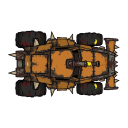
owner-review · HUMAN_CALIBRATION_PENDING, OWNER_APPROVAL_PENDING, VLM_LOW_CONFIDENCE
Broad soot/rust fortress, corner teeth and right-facing cannon; four heavy tyre masses. Roof-plan read and large armour blocks clearly exceed v1. Pixel gates pass; owner taste remains pending.
Local observations and source hash
mimo-9b:q8-64k: A heavy four-wheel spiked fortress vehicle shown in strict overhead view on a flat magenta background. Four enormous exposed black tyres with swollen squared guards sit at the corners. A broad slab roof of ochre and rusted armour plates covers the cabin, with a short cannon aimed to the right and a blunt full-width ram at the right end. Triangular shoulder teeth and spikes project around the perimeter. The silhouette is roughly 2:1 length-to-width. No visible grille, side doors, or vertical walls. No cast ground shadow; flat cel-style shading with symmetric material treatment.
qwen3.8:27b-64k: A heavy, four-wheeled spiked fortress vehicle depicted in a strict top-down view against a solid magenta background. The vehicle features a broad, slab-like roof painted in ochre and rust tones, with a short cannon mounted centrally and aimed towards the right. The chassis is heavily armored with stacked scrap plates, triangular shoulder teeth, and a blunt, full-width welded ram structure at the front (right side). Four enormous, exposed black tires with deep treads are visible at the corners, surrounded by hugely swollen, squared wheel guards. The overall silhouette is robust and compact, with a length-to-width ratio of approximately 2.0:1, and the design emphasizes a compressed cabin swallowed by heavy armor. The vehicle is centered within the frame, maintaining a clear margin from the edges.
d2e297baf254c4c4d6dafab99d2ac3bbbc1266eb18c1038d09788569b41c7b2dNeedle
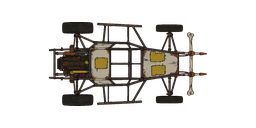
owner-review · HUMAN_CALIBRATION_PENDING, OWNER_APPROVAL_PENDING, VLM_DISAGREEMENT, VLM_LOW_CONFIDENCE, VLM_UNCERTAIN
Narrow open tubular chassis with exposed rear engine and forked right nose. Large transparent gaps and four thin tread tops separate it strongly from Bastion at 96px. No stretching applied.
Local observations and source hash
mimo-9b:q8-64k: A flat vector illustration of a skeletal rat-rod buggy on a solid magenta background. The vehicle is drawn in strict overhead view with a dark tubular cage chassis, four skinny black tires on long outriggers, an exposed dark engine block at the left rear, and a forked ram ending in a pointed nose at the right. Two small ochre patched panels sit on the pale central chassis panels. The overall silhouette is elongated and horizontal with the nose facing screen right.
qwen3.8:27b-64k: A skeletal rat-rod buggy with a thin cage frame, four exposed wheels on outriggers, a rusted nose with a forked ram at the right, and an exposed engine at the left rear. The vehicle has large magenta negative-space gaps, bare tubular spars, and two small ochre patched panels. It is fragile and stripped to the bones, with a total silhouette length-to-width ratio of 2.2:1. The image is set against a solid magenta background.
e06d788e5aff2ac8ba53c813d41ae82d25bc9bbd06e87c135fed875707463de9Line
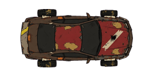
owner-review · HUMAN_CALIBRATION_PENDING, OWNER_APPROVAL_PENDING, VLM_LOW_CONFIDENCE
Corrected roof plan removes prior circular wheel side faces. Low red coupe body, chipped off-centre ivory stripe and squared welded repairs. Pixel gates pass.
Local observations and source hash
mimo-9b:q8-64k: A stylized top-down illustration of a compact coupe on a flat magenta background. The car body is a rounded wedge with a broad dark windshield, a patched dried-red hood, and a bone-white diagonal stripe. Four inset wheels are visible, with a short bent flat spoiler at the left rear. The overall silhouette is horizontal with the nose facing right.
qwen3.8:27b-64k: A top-down view of a compact coupe with a rounded nose facing right, featuring a broad dark windshield, a patched dried-red hood with a chipped bone stripe, welded door shields, and a short bent flat rear spoiler at the left. The vehicle has a recognizable low coupe roof, four inset wheels, and a total silhouette length-to-width ratio of 2.08:1. The image is set against a solid pink background with no visible ground shadow or one-sided illumination.
bbbe7fea32ba7ce10e1e333f92cbc9cd7233f2e6e49e11ee0a3baf28a933ae68Comet
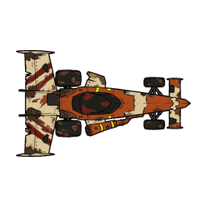
reject · ASPECT_BAND, CROPPED_OR_MARGIN, HUMAN_CALIBRATION_PENDING, OWNER_APPROVAL_PENDING, VLM_LOW_CONFIDENCE
Third source keeps overhead roof/tyre tops but a very wide rear wing makes aspect 1.64 versus C1 2.57, and right source margin is 22px. Rejected at the three-attempt cap. Prior attempts remain in evidence; not an approved reference.
Local observations and source hash
mimo-9b:q8-64k: A stylized lopsided dragster shown in strict overhead view on a flat magenta background. The long rust-orange tapered nose points to the right, with a narrow dark teardrop canopy offset upward, one large exposed exhaust on the opposite flank, and a wide patched split wing at the left. Four exposed wheels are visible, along with a small triangular ram fork and interrupted bone stripes. The silhouette is continuous and roughly 2.57:1 in length-to-width ratio.
qwen3.8:27b-64k: A stylized, top-down view of a lopsided dragster with a rust-orange and white color scheme, featuring a long tapered nose pointing to the right, a dark teardrop canopy, exposed wheels, and a wide split wing on the left, set against a solid magenta background.
42791856f218da677bc40304e34538011c7270eb2d9497ae6f0a747cf15bc0a7Trail
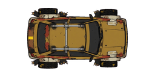
owner-review · HUMAN_CALIBRATION_PENDING, OWNER_APPROVAL_PENDING, VLM_DISAGREEMENT, VLM_LOW_CONFIDENCE
Second source is a true roof plan with tread rectangles; first side-facing hatchback rejected. Squat ochre hatch, roof braces and compact broad stance distinguish the grip archetype.
Local observations and source hash
mimo-9b:q8-64k: A stylized top-down illustration of a squat rally hatchback on a flat magenta background. The car is oriented with its nose to the right, featuring a broad ochre body, four heavily treaded black tyres with yellow chevron markings, exposed wheel arches, a short boxy roof, a central silver roof-rack brace, and a small flat spoiler at the left. The body shows chipped bone-white fender patches, torn rubber flaps, and rust-colored underpanel accents. Two small rectangular labels reading 'GRIP-77' are visible on the roof surface.
qwen3.8:27b-64k: A top-down view of a squat, boxy ochre rally hatchback with a short roof, broad exposed wheel arches, and four aggressively treaded tires. The vehicle features a stubby nose facing right, a small flat broken spoiler at the left, chipped bone fender patches, torn rubber flaps, and dusty rust underpanels. It has an empty roof-rack brace and a compact, wide, agile stance with no mounted gun. The total silhouette length-to-width ratio is 1.77:1, including wheels and appendages. The car is positioned within the central 66 percent of the square, with at least 17 percent empty margin on each side.
920a5e898d6921489bc4ac1eb5e421124d71be50959476aec7a29031f2606275Flint
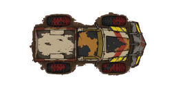
owner-review · HUMAN_CALIBRATION_PENDING, OWNER_APPROVAL_PENDING, VLM_LOW_CONFIDENCE
Third source has complete margins, squat ram-pickup roof and open rear-bed shape. There is a pale structural bed panel, not the first attempt loose bone. Strong blunt rightward ram; pixel gates pass.
Local observations and source hash
mimo-9b:q8-64k: A stylized top-down illustration of a squat blunt ram pickup on a flat pink background. The vehicle faces screen right with a broad shovel-like welded wedge bumper at the right end, a short rust-orange forward cab, and an open empty rectangular scrap cargo bed at the left. Four oversized squared tyres are visible. A battered bone-colored cross-brace lies flat in the bed. The overall silhouette is horizontal with the nose to the right.
qwen3.8:27b-64k: A top-down view of a heavily modified, squat pickup truck with a blunt, shovel-like ram bumper on the right side. The vehicle features a short, rusted cab and an open, empty rectangular cargo bed on the left, containing a flat, bone-like cross-brace. It is equipped with four oversized, squared tires and displays a battered, industrial aesthetic with yellow and red hazard stripes on the front. The vehicle is centered on a solid pink background with no visible occupants or text.
aa4331cbe06cb472925ede07b70250fa566ce513a9097d15877015a6cc06fad0Quill
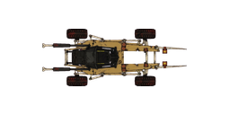
reject · CROPPED_OR_MARGIN, HUMAN_CALIBRATION_PENDING, OWNER_APPROVAL_PENDING, VLM_LOW_CONFIDENCE
Third source now has a long skeletal chassis and transparent interior, but long forward tips leave only 16px at the right edge. Reject despite readable 96px light silhouette. Three-call ceiling reached; no further spend.
Local observations and source hash
mimo-9b:q8-64k: A light mechanical spider shown in strict overhead view on a flat magenta background. The vehicle has a long bone-yellow tubular chassis with a pinched, empty black central cockpit, four detached-looking slim black wheel pods joined by exposed pale tubular arms, twin bare rear booms at LEFT, and one needle-like RIGHT nose. Two small rust plates are visible on the chassis. The silhouette is horizontal with the nose facing screen right, and the object occupies the central portion of the square with generous empty margins.
qwen3.8:27b-64k: A stylized, top-down view of a light mechanical spider-like vehicle with a central cockpit, four detached-looking wheel pods connected by exposed tubular arms, twin rear booms on the left, and a needle-like nose on the right. The vehicle features bone and soot metal with two small rust plates, large open gaps, and spindly limbs, creating a silhouette with more negative space than bodywork. The overall design is symmetrical and centered within the frame.
e70dc698e31b1d03d97608477321242e678bb1fda19372dbc228d9683d3f452dVandal
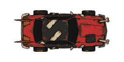
owner-review · HUMAN_CALIBRATION_PENDING, OWNER_APPROVAL_PENDING, VLM_LOW_CONFIDENCE
Second source removes side-looking wheel hubs; red interceptor roof plan with chipped diagonal ivory shoulder patches, sharp ram and short tail fins. Broad hard body contrasts with light frames.
Local observations and source hash
mimo-9b:q8-64k: A stylized overhead illustration of a heavily armored interceptor sedan on a flat magenta background. The vehicle is oriented horizontally with its nose to the right. It has a long dried-red hood and rear deck, a squared soot-black cabin with two blank chipped bone-colored diagonal shoulder patches, four mostly enclosed wheels, and asymmetric welded door armour. A low serrated ram protrudes from the right side. The silhouette is wide and low with a broad prow and compact rear.
qwen3.8:27b-64k: A top-down view of a red, battle-damaged sedan with a black roof, set against a solid pink background. The vehicle features a long hood, a squared cabin, and visible wear and tear, including rust and chipped paint. The wheels are mostly enclosed, and the overall design suggests a rugged, aggressive interceptor style.
a671a83642e093157fe189271d70b2b03765e454a919d0dfe18a84351b90ae9cKestrel
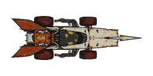
reject · CROPPED_OR_MARGIN, HUMAN_CALIBRATION_PENDING, OWNER_APPROVAL_PENDING, VLM_LOW_CONFIDENCE
Long spear silhouette and small rear fins read at 96px, but the right tip leaves 24px margin. Rejected at the three-attempt ceiling. No padding or stretch used to pass.
Local observations and source hash
mimo-9b:q8-64k: A stylized top-down illustration of a long slender bone-white sprint chassis on a flat magenta background. The nose points right as a long pointed spear-like tip. A very narrow dark capsule cockpit sits mid-body, with exposed dark engine machinery and a rust-orange rectangular engine block at the left rear. Two swept rust-orange rear fins extend leftward. Four dark treaded wheel pods are tucked beneath the body, with sparse dark exhaust tubes wrapping below. The chassis is chipped and weathered with rust and yellow paint patches. The silhouette is long and horizontal, with the nose facing screen right.
qwen3.8:27b-64k: A top-down view of a long, slender, spear-like sprint chassis with a bone-white nose pointing to the right. The vehicle features a narrow dark cockpit, four tucked wheel pods, and two large, swept rust-colored rear fins with an exposed engine at the left end. The body shows signs of wear with chipped panels and sparse wrapped exhaust tubes. The entire vehicle is centered on a solid magenta background, maintaining a horizontal main axis and fitting within the central portion of the frame.
c660f4cc3695a4c8e3a5556724e4588fff1a2d5e8972ba437a667679462d41d1Bulwark
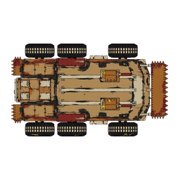
owner-review · HUMAN_CALIBRATION_PENDING, OWNER_APPROVAL_PENDING, VLM_LOW_CONFIDENCE
Six rectangular tyre treads, broad three-rib roof, paired short mounts and full-width ram. Dense solid mass strongly contrasts with Needle; source aspect and margins pass.
Local observations and source hash
mimo-9b:q8-64k: A stylized top-down illustration of an enormous six-wheel armoured endurance carrier on a flat magenta background. The vehicle is a broad, nearly solid battle-wagon mass with three pairs of massive black tyres, each showing chunky white tread blocks. A full-width squared ram extends at the right end, while a short engine deck sits at the left. Three parallel bone-coloured roof ribs are separated by soot-dark channels, with two squat roof gun mounts pointing right. Layered rust plate skirts and toothed corner shields flank the body. The silhouette is horizontal with the nose facing screen right, and the composition is centered with generous empty magenta margin on all sides.
qwen3.8:27b-64k: A top-down view of a heavily armored, six-wheeled vehicle with a rusted, battle-worn appearance. The vehicle features three pairs of massive tires, a squared ram at the front (right side), and two gun mounts on the roof pointing right. The roof has three parallel ribs separated by dark channels, and the vehicle is equipped with toothed corner shields. The overall design suggests a robust, endurance-focused carrier with a broad, solid mass and minimal empty space.
59f406468e6050fe009745870bd20462b9d4ec37813523f1c5764c6f31c4439erook

owner-review · HUMAN_CALIBRATION_PENDING, OWNER_APPROVAL_PENDING, VLM_LOW_CONFIDENCE
Complete gaunt bust, broken goggles, bitter face and one large jagged shoulder plate; torn costume and harsh soot values. Small triangular warning pictograms retained as wordless details.
Local observations and source hash
mimo-9b:q8-64k: A flat-shaded comic-style bust of an adult male scavenger on a solid pink background. He has medium-brown skin, gaunt angular cheeks, a healed cheek scar, uneven close-cropped dark hair, and a dust scarf wrapped around his neck. He wears a pair of goggles pushed up onto his forehead, one lens broken with a jagged crack and the other dark. His expression is sour and calculating, with a narrow hunched silhouette. He wears a torn mustard-brown jacket and a large oversized jagged welded shoulder plate on his right shoulder, dark grey with rust and holes. The head and shoulders occupy the central portion of the square with generous empty margin.
qwen3.8:27b-64k: A head-and-shoulders bust of an adult male with medium-brown skin, gaunt angular cheeks, and a healed scar on his left cheek. He wears a pair of goggles on his forehead, one lens of which is cracked. His hair is short and uneven. He is dressed in a dusty, tattered yellow scarf and a dark, rusted, and damaged chest plate with a single large, jagged shoulder plate on his right side. The background is a solid, flat pink color. The lighting is even and symmetric, with no directional shadows or highlights.
b491e401e9fbf8193acd4eeae75407d7647d5391ad55f4cef209a7a628951a3dox

owner-review · HUMAN_CALIBRATION_PENDING, OWNER_APPROVAL_PENDING, VLM_LOW_CONFIDENCE
Wide slab shoulders and square silver-haired head form the heavy-hauler silhouette. Original portrait traits retained; gender is not inferred from appearance or a model vote.
Local observations and source hash
mimo-9b:q8-64k: A one-head-and-shoulders bust of an adult male heavy hauler with pale weathered skin, broad square face and neck, short silver bristle hair, dark eyebrow scar, enormous unequal slab shoulder armour and a patched soot work vest. Calm implacable stare, low wide fortress silhouette; chipped bone collar bolts. Symmetric flat material shading, no directional facial lamp. No weapon, car, lettering, real person resemblance or background scene.
qwen3.8:27b-64k: A head-and-shoulders portrait of an adult male heavy hauler with pale, weathered skin, a broad square face, and short silver bristle hair. He has a dark eyebrow scar and a calm, implacable stare. He wears enormous, unequal slab shoulder armor and a patched, soot-stained work vest with chipped bone collar bolts. The figure is centered in the frame with generous empty margins, rendered with symmetric flat material shading and no directional lighting.
90eed57a771aa23277c970f2d48023a6179c8dc390e4b848ee24ffa482859bfbvex

owner-review · HUMAN_CALIBRATION_PENDING, OWNER_APPROVAL_PENDING, VLM_LOW_CONFIDENCE
Corrected complete bust: tall wild swept crest, narrow pointed shoulders, scarf and toothy restless expression. Strongly distinct from broad Ox and reserved Marrow.
Local observations and source hash
mimo-9b:q8-64k: A stylized comic-book portrait of an adult male speed addict bust on a flat magenta background. He has light-brown skin, a tall swept-back ragged dark hair crest, a small moustache, and a wide wild clenched grin with visible teeth. Rust-orange patched sleeveless racing suit with dark grime, torn edges, and yellow triangular warning symbols. Racing goggles hang around his neck over a red-and-white striped scarf. Asymmetrical scarf ends flare out behind his shoulders. Symmetric flat cel shading with no directional lamp and no cast shadow.
qwen3.8:27b-64k: A stylized, head-and-shoulders portrait of an adult male character against a solid magenta background. The character has light-brown skin, a small moustache, and a wild, clenched grin. He features a tall, swept-back crest of dark, ragged hair. He is wearing a rust-orange, patched, sleeveless suit with narrow, sharp shoulders. Chipped racing goggles hang around his neck, and an asymmetrical scarf with red, white, and yellow ends is visible behind his head. The illustration uses symmetric, flat material shading with no directional lighting or cast shadows. The composition is centered with generous empty margins, and the hair and shoulders occupy the central portion of the square frame. There are no letters, numbers, logos, watermarks, weapons, vehicles, or background scenes.
212484a7338ccaa6f420db397c7da46ff72ebb5ccaa0b2ec1765586737c5b88bmica

owner-review · HUMAN_CALIBRATION_PENDING, OWNER_ACCEPTANCE_PENDING, OWNER_APPROVAL_PENDING
Compact balanced dark-skinned portrait, coiled hair/head wrap, ear protector and short cheek marks; steady expression and broken jacket hems.
Local observations and source hash
mimo-9b:q8-64k: A stylized illustration of an adult female bust with dark skin, short coiled black hair, and a dirty bone-colored head wrap. She has focused eyes, two short soot cheek-paint dashes, and a rust ear protector. She wears a cropped patched ochre jacket with dark tyre-rubber shoulder guards and a dark undershirt. The bust faces the viewer with a controlled expression, set against a plain light background.
qwen3.8:27b-64k: A head-and-shoulders portrait of an adult female with dark skin, short coiled hair, and a dirty bone-colored head wrap. She wears a rust-colored ear protector on her right side, a cropped ochre jacket with visible patches and tire-rubber shoulder guards, and has two short soot-like dashes on her cheeks. The expression is focused and controlled, with symmetric flat shading and no directional lighting or background elements.
8bf05b77a0445b76b80ee564fa4afe96f0496dbf1836f346dbc20e62be6c252erelay

owner-review · HUMAN_CALIBRATION_PENDING, OWNER_APPROVAL_PENDING, VLM_LOW_CONFIDENCE
Slanted haircut, repaired ear defenders, one triangular shoulder fin and red/bone jacket create the asymmetrical radio-runner silhouette. No readable lettering.
Local observations and source hash
mimo-9b:q8-64k: A stylized head-and-shoulders bust of an adult androgynous racer with fair weathered skin, short asymmetrical dark undercut, and a repaired ear defender with a short broken aerial. The figure wears a dried-red and bone patched high-neck jacket with one thin scrap shoulder fin. The expression is thoughtful and alert, with a distinctive slanted silhouette. The composition is centered with generous empty margins.
qwen3.8:27b-64k: A head-and-shoulders portrait of an androgynous adult character with fair, weathered skin and short, asymmetrical dark hair featuring an undercut. The character wears repaired ear defenders with a short, broken aerial and a high-neck jacket patched with dried-red and bone-colored materials. A single thin scrap shoulder fin is visible on the left side. The expression is thoughtful and alert, with a distinctive slanted silhouette. The image uses symmetric flat material shading without directional lighting, and there are no letters, logos, or background scenes.
6409720aafe6b754547b9ed45a5b2c4d714d588390551b85dbbdd0314d3e202bmarrow

owner-review · HUMAN_CALIBRATION_PENDING, OWNER_APPROVAL_PENDING, VLM_LOW_CONFIDENCE
Corrected complete older face, tall black collar and broad layered shoulder mantle. Severe silver crest and restrained expression distinguish the boss without a copied costume.
Local observations and source hash
mimo-9b:q8-64k: A stylized head-and-shoulders bust of an older adult with olive weathered skin, angular face, deeply lined mouth, silver hair swept into a severe short crest, high soot-black jagged collar, and layered rust metal shoulder mantle. Stern hostile composure, imposing wide triangular silhouette, bone scarf, and one old healed temple scar. No crown or insignia.
qwen3.8:27b-64k: A stern, older adult male character with olive, weathered skin and an angular face, featuring a deeply lined mouth and a healed scar on his temple. He has silver hair swept into a severe short crest. He wears a high, soot-black jagged collar and a layered rust metal shoulder mantle, along with a bone-colored scarf. The character is depicted in a head-and-shoulders bust, facing the viewer, with a symmetric flat material shading and no directional lighting. The background is a solid pink color, and there are no weapons, cars, lettering, or other background scenes present.
4c6f10f94631619e7edfd8d71f6aeb9ce19a8e24a5b5bbea3f77fc0388ffebe8asphalt-worn

owner-review · HUMAN_CALIBRATION_PENDING, OWNER_APPROVAL_PENDING, VLM_LOW_CONFIDENCE
Quiet charcoal material with sparse ivory/rust wear; no bolted plate or painted border.
2×2 repeatLocal observations and source hash
mimo-9b:q8-64k: A seamless dark charcoal asphalt tile with fine aggregate speckle, scattered pale abrasion scuffs, subtle dry-brush grain, and quiet large-value variation. No road markings, objects, lettering, or borders are visible.
qwen3.8:27b-64k: A dark charcoal asphalt surface with fine aggregate and scattered abrasion scuffs, medium wear, no large cracks, and a subtle dry-brush grain texture.
1257b92fd385d085df450780efa323dfe035e80f97382768026b86554793df6aasphalt-heavy
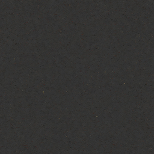
owner-review · HUMAN_CALIBRATION_PENDING, OWNER_APPROVAL_PENDING, VLM_LOW_CONFIDENCE
Dark aggregate field, finer and denser than worn asphalt.
2×2 repeatLocal observations and source hash
mimo-9b:q8-64k: A seamless dark grey asphalt tile with dense fine pitting, short randomly distributed hairline cracks, subtle warm speckles, and fine dry-brush grain. No road line, car, prop, object, lettering, ink perimeter, or scene. Quiet large values with no dramatic cracks, lighting gradient, focal motif, or frame. Single unrepeated stochastic field with seamless edges.
qwen3.8:27b-64k: A uniform, dark grey asphalt surface with dense fine pitting and very short, randomly distributed hairline cracks. The texture is consistent across the entire field, showing high wear without long continuous cracks, patches, or focal motifs. Lighting is neutral with no cast shadows or directional illumination, and the edges appear seamless.
c0c0f142e68151d327a161b25674f4456787cd927947763ab1d36033b6fbf985concrete
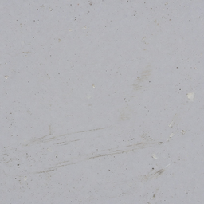
owner-review · HUMAN_CALIBRATION_PENDING, OWNER_APPROVAL_PENDING, VLM_LOW_CONFIDENCE
Bone-grey slab grain with fine scratches; no artificial perimeter.
2×2 repeatLocal observations and source hash
mimo-9b:q8-64k: A seamless cool light-grey painted concrete field with fine random pores, tiny chips, subtle dry-brush grain, faint scratches and small pale scuffs. No slab seams, large cracks, road line, car, prop, lettering, ink perimeter or scene. Quiet even lighting with no cast ground shadow and no dramatic one-sided illumination.
qwen3.8:27b-64k: A uniform, cool light-grey concrete surface with fine random pores, tiny chips, and subtle dry-brush grain. No slab seams, large cracks, objects, text, or distinct lighting gradients are visible.
a9ddba8ab650c7bdda0006835ce250194905262a03c427d244d64073c828a66ametal
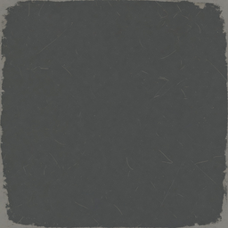
reject · HUMAN_CALIBRATION_PENDING, OWNER_APPROVAL_PENDING, SUPERSEDED_SOURCE_REQUIRES_REPAIR, TILE_REPETITION, VLM_DISAGREEMENT, VLM_LOW_CONFIDENCE, VLM_UNCERTAIN
Original retained for audit; use inspected derivative v4-fusion-surfaces-metal-crop768-v1. Fixed centre crop removes the generated metal frame. Fine grey scratches remain; no rivets or border.
2×2 repeatLocal observations and source hash
mimo-9b:q8-64k: A single seamless painted tile of cool grey matte industrial steel, with sparse irregular fine scratches, subtle dry-brush grain, and a quiet large-value field. No rivet grid, checker pattern, large panels, road line, car, prop, lettering, ink perimeter, or scene. The field is uniform and stochastic, with no repeated quadrants or mirrored halves.
qwen3.8:27b-64k: A dark grey, matte, industrial steel-like surface with sparse, irregular fine scratches and subtle grain. The texture appears uniform and stochastic, with no visible rivets, patterns, large panels, or distinct objects. The edges are slightly irregular, suggesting a seamless tile design.
8ad3a22e735bcb82ded4b1726f4749be2c3566f56b2eeb1e83fdda727727727dasphalt-clean
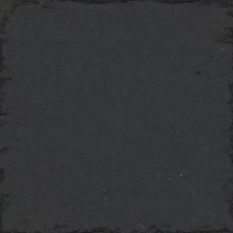
reject · HUMAN_CALIBRATION_PENDING, OWNER_APPROVAL_PENDING, SUPERSEDED_SOURCE_REQUIRES_REPAIR, VLM_LOW_CONFIDENCE
Original retained for audit; use inspected derivative v4-fusion-surfaces-asphalt-clean-crop768-v1. Fixed centre crop removes dark perimeter; sparse aggregate remains.
2×2 repeatLocal observations and source hash
mimo-9b:q8-64k: A seamless dark soot-asphalt tile with sparse tiny aggregate flecks, subtle dry-brush grain, and a slightly darker irregular perimeter; no cracks, lines, objects, or focal motif.
qwen3.8:27b-64k: A dark, near-uniform field of soot-like asphalt texture with sparse tiny aggregate specks and fine dry-brush grain. No cracks, lines, objects, lettering, or distinct lighting gradients are visible. The surface appears seamless and stochastic, consistent with an empty painted material tile.
dacd4c9a4ad9185f8e7046f989ca4eceb729607c059ca98be645bb61e94f8177ice
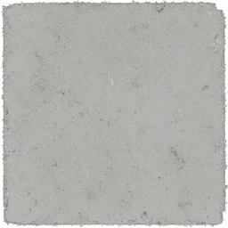
reject · HUMAN_CALIBRATION_PENDING, OWNER_APPROVAL_PENDING, SUPERSEDED_SOURCE_REQUIRES_REPAIR, TILE_REPETITION, VLM_LOW_CONFIDENCE
Original retained for audit; use inspected derivative v4-fusion-surfaces-ice-crop768-v1. Fixed centre crop removes framed perimeter; quiet pale granular surface.
2×2 repeatLocal observations and source hash
mimo-9b:q8-64k: A single square tile of low-contrast dirty bone-grey painted material with fine frost-like dry-brush grain, scattered tiny pale and faint warm flecks, quiet large values, no large cracks, no border glow, no directional reflection, no frame, no lettering, no object, and no repeated quadrants.
qwen3.8:27b-64k: A square tile with a uniform, low-contrast bone-grey surface. The texture is fine and granular, resembling dry-brushed frost or a subtle mineral grain, with no large cracks, distinct objects, or directional lighting. The edges are slightly irregular, consistent with a seamless material field.
f3405e3c8a3117bcc0d7891d2bbbba3ff07fae1e78d016456b62223ae25681dboil
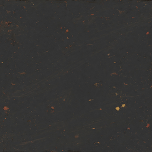
owner-review · HUMAN_CALIBRATION_PENDING, OWNER_APPROVAL_PENDING, VLM_LOW_CONFIDENCE
Irregular dark/rust oil marks; no raised panel, text or machine object.
2×2 repeatLocal observations and source hash
mimo-9b:q8-64k: A seamless painted asphalt tile: dark charcoal-grey field with fine dry-brush grain, scattered small irregular matte scuffs in muted brown, rust, ochre and pale tan, plus faint diagonal wear streaks. No puddle outline, cracks, lighting gradient, focal motif, frame, border, lettering, or objects. Quiet large values with subtle brown-grey sheen.
qwen3.8:27b-64k: A dark, textured surface resembling soot-dark oily asphalt with a subtle brown-grey sheen. The image features small, irregular matte scuffs and fine, understated dry-brush grain. There are no puddle outlines, dramatic cracks, lighting gradients, focal motifs, frames, or borders. The texture is a single, unrepeated stochastic field with seamless edges, and there are no road lines, cars, props, objects, lettering, ink perimeters, or scenes present.
b1f89850f0bf08eee8774cf3a707da77bb949f480db859a782a137fae586ea92kerb
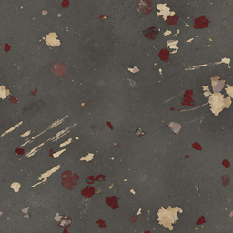
owner-review · HUMAN_CALIBRATION_PENDING, OWNER_APPROVAL_PENDING, VLM_LOW_CONFIDENCE
Scattered worn red/bone paint on grey material; no continuous outlined stripe.
2×2 repeatLocal observations and source hash
mimo-9b:q8-64k: A seamless painted material tile showing weathered bone and dried-red paint over dark grey concrete, with irregular broken patches, dirt, fine dry-brush grain, and quiet large values. No uniform racing stripes, black outlining, dramatic cracks, lighting gradient, focal motif, frame, border, road line, car, prop, object, lettering, ink perimeter, or scene.
qwen3.8:27b-64k: A flat, textured surface resembling weathered concrete or painted material, featuring irregular patches of dried red and bone-colored paint with visible wear and dirt showing through. The surface has a fine, dry-brush grain and lacks any distinct objects, lines, or focal points.
4690d0023a67e9323859e19bc0fdb009d0be58074af370749a20296b42f12b3agrass
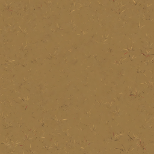
owner-review · HUMAN_CALIBRATION_PENDING, OWNER_APPROVAL_PENDING, VLM_DISAGREEMENT, VLM_LOW_CONFIDENCE
Quiet ochre grass field, sparse fine blades, no central object.
2×2 repeatLocal observations and source hash
mimo-9b:q8-64k: A seamless painted tile of muted dirty ochre short grass seen directly from above. Fine individual blades of varied directions are distributed in a tiny-scale stochastic pattern across the field, with quiet large values, understated dry-brush grain, and no dramatic cracks, lighting gradient, focal motif, frame, border, road line, car, prop, object, lettering, or ink perimeter. The composition is a single unrepeated stochastic field with seamless edges and no repeated quadrants or mirrored halves.
qwen3.8:27b-64k: A uniform, muted ochre field with fine, short grass blades scattered in varied directions, exhibiting a stochastic distribution and dry-brush grain texture. The image lacks any focal motifs, borders, or distinct objects, maintaining a seamless and even appearance.
3d87df197a88bf726a467191978051ac9668b43c49e529e2cd36ddc781d38876dirt

owner-review · HUMAN_CALIBRATION_PENDING, OWNER_APPROVAL_PENDING, VLM_LOW_CONFIDENCE
Muted earth grain; anonymous low-contrast field.
2×2 repeatLocal observations and source hash
mimo-9b:q8-64k: A seamless warm brown packed-dirt tile with fine ochre and grey grit, subtle dry-brush grain, and no tracks, objects, or borders.
qwen3.8:27b-64k: A uniform, warm brown packed dirt surface with fine ochre and grey particles evenly scattered. The texture features subtle dry-brush grain and quiet large values, with no visible wheel tracks, footprints, cracks, or focal motifs. The lighting is neutral and even, with no cast shadows or dramatic gradients, presenting a seamless, stochastic field.
b8b0788822e9074f8aca7b6cc1a546d58648d4823cef619d477485fd4514585dgravel
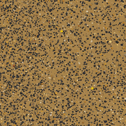
reject · HUMAN_CALIBRATION_PENDING, OWNER_ACCEPTANCE_PENDING, OWNER_APPROVAL_PENDING, SUPERSEDED_SOURCE_REQUIRES_REPAIR, TILE_SEAM_MEAN, TILE_SEAM_PEAK
Original retained for audit; use inspected derivative v4-fusion-ground-gravel-v1-wrap-v1. Dense small dark pebbles; eight-pixel wrap repair removes the seam. Busier than dirt; use for distinct gravel patches.
2×2 repeatLocal observations and source hash
mimo-9b:q8-64k: A seamless painted tile of a tan ochre ground densely scattered with fine irregular stones in soot-black, ochre, cream, and muted grey tones. The stones are small and evenly distributed with no large rocks, no visible lighting gradient, no cast shadows, no cracks, no focal motif, and no frame or border. The field is a single unrepeated stochastic distribution with seamless edges.
qwen3.8:27b-64k: A seamless, uniform field of fine, irregular ochre and soot-colored stones densely packed on a tan background. The distribution is even and stochastic, with no large rocks, focal motifs, borders, or distinct lighting gradients. The texture appears as a dry-brush grain with quiet, consistent values throughout the image.
61137ebbcd3271ee00bb9574e1ca5ef5596f89debf8d739d719bfe97fb831249concrete-straight
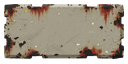
owner-review · HUMAN_CALIBRATION_PENDING, OWNER_APPROVAL_PENDING, VLM_DISAGREEMENT, VLM_LOW_CONFIDENCE
Chipped pale rectangular barrier top; dark wear at corners.
Local observations and source hash
mimo-9b:q8-64k: A single straight horizontal concrete safety wall module shown as a flat overhead plan view, occupying the middle band of the canvas. It has a wide rectangular grey top plane with squared flush ends and small worn chips, plus a dark irregular perimeter edge with rust-red staining and scattered pale debris. The asset floats in a large empty magenta field with generous margins on all four sides. No cast shadow, scene, car, or lettering is visible.
qwen3.8:27b-64k: A single, straight horizontal concrete safety wall module with a rectangular grey top plane, featuring tiny worn chips and dark stains, floating in a large empty magenta field. The asset is centered with generous empty margins on all four sides, viewed from a strict directly overhead plan view with no visible front or side walls, and exhibits flat neutral material shading without cast shadows.
98d11b33b597eb3283a8a73e3584e5f0a08c6ad37484ad50d6645838885782a6concrete-corner
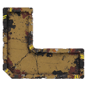
owner-review · HUMAN_CALIBRATION_PENDING, OWNER_APPROVAL_PENDING, VLM_DISAGREEMENT, VLM_LOW_CONFIDENCE
A single continuous L-shaped chipped slab; clear inner turn.
Local observations and source hash
mimo-9b:q8-64k: A single L-shaped concrete safety wall corner asset floating in a large empty magenta field. The asset shows two equal arms forming a clean square ninety-degree bend with squared flush ends, viewed from directly overhead in plan view. The concrete is tan/beige with heavy dark grime, rust-brown staining, cracks, and chipped edges. Yellow reflective chevron markings appear on several outer corners. No cast shadow is visible. The asset occupies the middle half of the canvas with generous empty magenta margin on all four sides.
qwen3.8:27b-64k: A single L-shaped concrete safety wall corner with two equal arms and a clean 90-degree bend, featuring a distressed texture with cracks and peeling paint, floating in a large empty magenta field.
204ffd45d2b3e7b3cd846c82bf3ef0f0406f38c652ddd421e0bfeb39bf913e73metal-straight
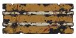
owner-review · HUMAN_CALIBRATION_PENDING, OWNER_APPROVAL_PENDING, VLM_DISAGREEMENT, VLM_LOW_CONFIDENCE
Three parallel ochre/rust rails, open gaps remain transparent.
Local observations and source hash
mimo-9b:q8-64k: A straight horizontal steel guardrail module shown as a flat rectangular top with two thin lengthwise ribs, squared flush ends, and small bolt heads, floating in a large empty magenta field.
qwen3.8:27b-64k: A horizontal, multi-layered structure resembling a weathered wooden or metal beam with visible bolts and wear, set against a solid magenta background. The object is centered in the middle half of the canvas with generous empty margins on all sides.
65afed33c48b7230f378b46c79109dd0d439548f5e1b808d452d0a11aee35911metal-corner
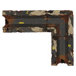
owner-review · HUMAN_CALIBRATION_PENDING, OWNER_APPROVAL_PENDING, VLM_DISAGREEMENT, VLM_LOW_CONFIDENCE
Three rails turn through a right angle; open interior.
Local observations and source hash
mimo-9b:q8-64k: A single L-shaped steel guardrail corner asset floating in a large empty magenta field. The asset is a plan-view corner with two equal-width arms meeting at a square ninety-degree bend. The horizontal arm extends left and the vertical arm extends down. The top surfaces show dark grey painted steel with extensive rust, brown corrosion, and pale beige paint loss. Two thin ribs run along the horizontal arm. The vertical arm shows a squared flush end at the bottom. Small yellow rectangular markings and a yellow triangular mark are visible on the surfaces. The asset has a black outline and no cast shadow. The subject is centered in the middle half of the canvas with generous empty magenta margin on all four sides.
qwen3.8:27b-64k: A single L-shaped steel guardrail corner with two equal arms, a clean 90-degree bend, and squared flush ends, rendered in a flat, neutral material style with no cast shadows or scene elements, floating in a large empty magenta field.
13143a39e2135fd4ce5636c9430568fd3647cd7662e9b07a2390f936ccdfd3f7hazard-straight
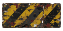
owner-review · HUMAN_CALIBRATION_PENDING, OWNER_APPROVAL_PENDING, VLM_LOW_CONFIDENCE
Broken ochre and soot diagonal hazard paint; physical rectangular top.
Local observations and source hash
mimo-9b:q8-64k: A single horizontal rectangular crash barrier top, alternating muted yellow and charcoal diagonal hazard bands, straight square ends, subtle edge chips, floating in a large empty magenta field.
qwen3.8:27b-64k: A single horizontal rectangular crash barrier top with alternating muted yellow and charcoal diagonal hazard bands, straight square ends, and subtle edge chips, floating in a large empty magenta field with generous margins on all sides.
3ba58990c14dae949d3b575612ff9e62a537686a967a9608433218ccca04a727hazard-corner
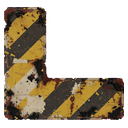
owner-review · HUMAN_CALIBRATION_PENDING, OWNER_APPROVAL_PENDING, VLM_DISAGREEMENT, VLM_LOW_CONFIDENCE
Corrected C shape is now a continuous L; two legs and an open inner corner.
Local observations and source hash
mimo-9b:q8-64k: A single L-shaped crash barrier top shown in a directly overhead plan view, floating in a large empty magenta field. The asset has equal-width arms with a clean square bend and square ends. Its surface is covered in alternating muted yellow and charcoal diagonal hazard bands, heavily distressed with chipped paint, rust, grime, and scattered debris. The material is flat and neutral with no cast shadow. The subject occupies the middle half of the canvas with generous empty margin on all four sides.
qwen3.8:27b-64k: A single L-shaped crash barrier top with equal-width arms and a clean square bend, featuring alternating muted yellow and charcoal diagonal hazard bands. The asset has a distressed, weathered texture with visible wear and chipped edges, and is isolated in a large empty magenta field with generous margins on all sides.
eeae030119ec640a0071af6d156f8043907f76c64015e8612af17a3ecee890b5tyres

owner-review · HUMAN_CALIBRATION_PENDING, OWNER_APPROVAL_PENDING, VLM_DISAGREEMENT, VLM_LOW_CONFIDENCE
One stacked tyre crown; broad dark tread and open centre.
Local observations and source hash
mimo-9b:q8-64k: A single large circular charcoal racing tyre shown as a flat overhead plan view, filling most of the canvas. The tyre is a thick dark grey ring with a large circular opening in the centre revealing the magenta background, surrounded by nested circular top rings and a jagged blocky outer tread edge. The surface is heavily weathered with rust-brown, orange, cream, red and yellow paint patches, scratches, chipped edges and small circular bolt holes. The background is a flat saturated magenta field with no ground, shadow, scene or lettering. The asset is centred and roughly fills the middle of the frame, with moderate magenta margin on all four sides.
qwen3.8:27b-64k: A compact stack of three charcoal racing tires viewed from a true overhead plan view, featuring a central circular opening and nested circular top rings. The tires exhibit a flat, neutral material shading with no cast shadows, set against a large, empty magenta background. The asset is isolated and centered, with generous empty margins on all four sides, and contains no visible vertical stack walls, front or side walls, or any lettering.
5cddfe16609effdf683fd9fbf5a7d71ce8ce4e4ba61484d7fb54056ce240fba9crate
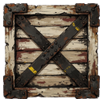
owner-review · HUMAN_CALIBRATION_PENDING, OWNER_APPROVAL_PENDING, VLM_DISAGREEMENT, VLM_LOW_CONFIDENCE
Top-down cross-braced timber crate; readable square silhouette.
Local observations and source hash
mimo-9b:q8-64k: A single isolated top-down shipping crate sprite on a flat magenta background. The crate is square, built from weathered ivory wooden slats with dark rusted metal corner brackets and a clear X-brace of dark metal straps. The X-brace has yellow warning bands and small illegible yellow markings. The crate is centered in the middle of the canvas with generous magenta margin on all four sides. Flat neutral shading with no cast shadow.
qwen3.8:27b-64k: A weathered, square wooden crate top with dark metal corner brackets and an X-brace arrangement, floating in a large empty magenta field.
5ab7c87cb3c696bff261256f5f016899e16c2820244731b5ba903c05188c30a3cone
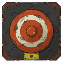
owner-review · HUMAN_CALIBRATION_PENDING, OWNER_APPROVAL_PENDING, VLM_DISAGREEMENT, VLM_LOW_CONFIDENCE
Concentric cone crown on a square base; overhead shape.
Local observations and source hash
mimo-9b:q8-64k: A directly overhead view of a square charcoal metal base with a rust-orange and ivory concentric ring pattern, a small rust-orange round tip at the centre, and a yellow rectangular strip near the bottom edge. The base has a jagged, chipped outline with rust-orange corrosion patches and ten dark circular bolt heads. It floats in a large empty magenta field.
qwen3.8:27b-64k: A rust-orange traffic cone viewed directly from above, featuring a small round rust-orange tip at the center of a rust-orange and ivory ring, mounted on a square charcoal base with visible bolts and rust spots. The asset is isolated and centered within a large empty magenta field, with generous empty margins on all four sides. The image uses flat, neutral material shading with no cast shadows, scene elements, or lettering, consistent with a strict directly overhead plan view.
e851babb7aae72817de69dc2afd23a0494540361a6d48044c8281704d44cf289sign
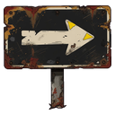
owner-review · HUMAN_CALIBRATION_PENDING, OWNER_APPROVAL_PENDING, VLM_LOW_CONFIDENCE
Corrected single right arrow on rust sign; no generated writing.
Local observations and source hash
mimo-9b:q8-64k: A single flat rectangular roadside sign board, face-on, with a bold bone-white right arrow on a soot-black panel, rusted edges, four bolt heads, and a short grey support extending downward, isolated in a large empty magenta field.
qwen3.8:27b-64k: A flat rectangular roadside sign board with a bold right-pointing arrow in bleached bone color on a dark, soot-like background. The sign is mounted on a short grey support post and is centered in a large empty magenta field, with generous margins on all sides. No letters, numerals, logos, or watermarks are present.
d4fc8f3c23648f186d30def0fe89b53cbce84eb09c5af2ac23d05c7441fd6ee7drum
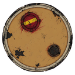
owner-review · HUMAN_CALIBRATION_PENDING, OWNER_APPROVAL_PENDING, VLM_DISAGREEMENT, VLM_LOW_CONFIDENCE
Ochre circular lid with two bungs; neutral light.
Local observations and source hash
mimo-9b:q8-64k: A single sealed oil drum lid shown directly from above, centered in a large empty magenta field. The round dirty ochre lid has a concentric rim, two small circular caps, and scattered dark grime marks. Flat neutral material shading with no cast shadow.
qwen3.8:27b-64k: A single, sealed oil drum viewed directly from above, featuring a round, dirty ochre lid with a concentric rim and two small circular caps. The drum is isolated and floating in a large, empty magenta field, with all pixels contained within the middle half of the canvas and generous empty margins on all four sides. The image uses flat, neutral material shading with no cast shadows, scene elements, or lettering, adhering to a strict directly overhead plan view.
29a8637ddbd621469d1c023ced58776b10a06ea6d3367cbebbe389495c48442btyres-scattered
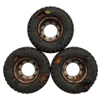
owner-review · HUMAN_CALIBRATION_PENDING, OWNER_APPROVAL_PENDING, VLM_DISAGREEMENT, VLM_LOW_CONFIDENCE
Three separate tread rings in triangular cluster; drag footprint supplied.
Local observations and source hash
mimo-9b:q8-64k: Three separate worn charcoal tyres arranged in a compact triangular cluster on a flat magenta background, each a complete circular ring with a visible metal rim and dark centre. The tyres are shown directly overhead as flat plan-view circles with no visible side walls, front grille, or cast shadow. Small rust-brown and yellow markings appear on the rubber and rims. The tyres occupy the middle portion of the canvas with generous empty magenta margin on all four sides.
qwen3.8:27b-64k: Three separate charcoal tires arranged in a compact triangular formation, viewed directly from above. Each tire is a complete circular ring with a dark center and visible rusted metal rims. The tires are floating in a large, empty magenta field with generous margins on all sides. The image features flat, neutral material shading with no cast shadows, scene elements, cars, or lettering. The tires are positioned within the middle half of the canvas, maintaining a strict overhead plan view without any visible front or side walls.
47b472eccbd045b815225ded1bd53e0d91d86d29cf99df5f085e03333197ecc8crate-metal
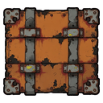
owner-review · HUMAN_CALIBRATION_PENDING, OWNER_APPROVAL_PENDING, VLM_DISAGREEMENT, VLM_LOW_CONFIDENCE
Rust orange welded square crate with pale corner plates.
Local observations and source hash
mimo-9b:q8-64k: A single isolated square rust-orange steel storage box lid shown in strict directly overhead plan view, floating in a large empty magenta field. The lid is a square orange rusted steel plate with a black outline, two grey vertical straps running top to bottom across the lid, four grey corner pads, and small metal corner pads with dark bolt heads. There are no markings, no lettering, no numbers, no logos, no watermarks, and no occupant inside a vehicle. The asset is a small complete object with generous empty magenta margin on all four sides.
qwen3.8:27b-64k: A closed square rust steel storage box top, featuring two grey straps across the lid and small metal corner pads, with no markings. The asset is isolated and floating in a large empty magenta field, with all pixels contained within the middle half of the canvas and generous empty margins on all four sides. The image is a flat, neutral material shading with no cast shadow, scene, car, or lettering, viewed from a strict directly overhead plan view with no visible front or side walls.
0b188fb712c78dbcce5363b7a3ce2d5fc33f839de2310fd146c202cc3ecbf891drum-red

owner-review · HUMAN_CALIBRATION_PENDING, OWNER_APPROVAL_PENDING, VLM_DISAGREEMENT, VLM_LOW_CONFIDENCE
Corrected circular red lid with bone band and two bungs; no barrel side wall.
Local observations and source hash
mimo-9b:q8-64k: A single sealed dried-red metal drum lid seen directly overhead, circular with an ivory horizontal band across it and two small yellow caps, isolated in a large empty magenta field.
qwen3.8:27b-64k: A single, sealed, dried-red metal drum viewed directly from above, featuring a circular lid with a horizontal ivory band and two small yellow caps. The asset is isolated and centered within a large, empty magenta field, with generous margins on all sides. The rendering uses flat, neutral shading with no cast shadows, scene elements, or text.
3d9e98e52a63915d5016f3c69b594e553b4a2b93f58a9dafaa40cd61426ffe9fbrush
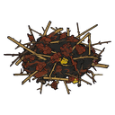
owner-review · HUMAN_CALIBRATION_PENDING, OWNER_APPROVAL_PENDING, VLM_LOW_CONFIDENCE
Low radial thorn and dry leaf cluster. Drag footprint deliberately separate from art alpha.
Local observations and source hash
mimo-9b:q8-64k: A single tangled oval clump of dry thorn brush rendered directly overhead on a large empty magenta field. The clump is a dense irregular oval of dark soot-black and rust-brown root masses, with sparse ochre and tan twigs radiating outward in many directions. Large transparent gaps between branches are visible against the magenta background. No soil patch, no ground shadow, no cast shadow, no lettering, no logos, and no watermarks are present. The asset is a small isolated complete object floating in a generous empty margin on all four sides.
qwen3.8:27b-64k: A single, isolated, oval-shaped clump of tangled dry thorn brush is centered in a large, empty magenta field. The clump features a dense core of dark soot and rust-colored roots, surrounded by sparse, ochre-colored twigs that radiate outward. There are large transparent gaps between the branches, and no soil patch is visible. The asset is rendered in a flat, neutral material shading style with no cast shadows, scene elements, or lettering. It is presented from a strict directly overhead plan view, with no visible front or side walls. The asset is small relative to the canvas, with extremely generous empty margins on all four sides, and all pixels are contained within the middle half of the canvas.
67e1d36169825c7722877bde3212719ec2c5b541e27aeea44279812a1b378f85rock-field

owner-review · HUMAN_CALIBRATION_PENDING, OWNER_APPROVAL_PENDING, VLM_LOW_CONFIDENCE
Corrected four angular overhead stones, shared low cluster; solid footprint supplied.
Local observations and source hash
mimo-9b:q8-64k: A compact irregular cluster of four angular boulders in rust, ochre, bone, and dark charcoal tones, arranged in a loose cross-like group. Each boulder shows distinct flat top facets with visible cracks, dark narrow crevices, and small yellow accent marks. The group floats in a large empty magenta field with generous margins on all sides. Flat neutral material shading with no cast shadow.
qwen3.8:27b-64k: A compact group of four angular boulders with rust and bone-colored facets, dark crevices, and a small yellow highlight, floating in a magenta field.
2c608cfabe69d9a671314e3bae44fba2a3d6b5599ccdae5eacf87c173594408bsoft-dune
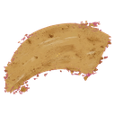
reject · HUMAN_CALIBRATION_PENDING, OWNER_APPROVAL_PENDING, SUPERSEDED_SOURCE_REQUIRES_REPAIR, VLM_LOW_CONFIDENCE
Original retained for audit; use inspected derivative v4-fusion-props-soft-dune-v1-despill-v1. Low crescent sand shape. Visible magenta fringe repainted from adjacent clean sand colours; original rejected. Drag footprint supplied.
Local observations and source hash
mimo-9b:q8-64k: A single isolated low crescent of loose ochre sand with sparse scuffed grain, broken soft feathered perimeter, and scattered ochre flecks, floating in a large empty magenta field. Flat neutral material shading, no cast shadow, no scene, car, or lettering. Strict directly overhead plan view. All pixels within the middle half of the canvas with generous empty margin on all four sides.
qwen3.8:27b-64k: A small, isolated crescent-shaped patch of ochre sand with a rough, feathered texture and scattered grains, floating in the center of a solid magenta background.
4316a54a769f724483fdd99868db686f45750620e2790ca13f9b2be501eb2202dead-tree
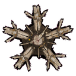
owner-review · HUMAN_CALIBRATION_PENDING, OWNER_APPROVAL_PENDING, VLM_DISAGREEMENT, VLM_LOW_CONFIDENCE
Corrected radial branch crown and central cut/bark core; height and renderer shadow supplied.
Local observations and source hash
mimo-9b:q8-64k: A single tall dead tree cluster seen directly overhead, centered in a large empty magenta field. The crown is a central thick splintered soot-dark trunk with a pale cracked top, surrounded by three crooked bone-brown branch forks spreading to uneven bare ends with large open gaps. Flat neutral material shading with no cast shadow.
qwen3.8:27b-64k: A top-down view of a dead tree cluster with a central thick splintered trunk and three crooked bone-brown branch forks spreading to uneven bare ends, set against a solid magenta background.
328c40a6efee02bb80a2ad495280aa5bf25e98f235d6ae697f458be42c7a5740rock-spire

reject · HUMAN_CALIBRATION_PENDING, OWNER_APPROVAL_PENDING, SUPERSEDED_SOURCE_REQUIRES_REPAIR, VLM_DISAGREEMENT, VLM_LOW_CONFIDENCE
Original retained for audit; use inspected derivative v4-fusion-props-rock-spire-v1-despill-v1. Tapered angular overhead rock crown with pale caps. Visible magenta fringe repainted from adjacent rock; original rejected. Tall solid footprint supplied.
Local observations and source hash
mimo-9b:q8-64k: A tall narrow angular rock spire seen directly overhead, with a jagged rust-brown crown and three bone chipped facet tips. The footprint is asymmetrical and compact, with flat top-plan facets and no visible side elevation or cast shadow. The asset is isolated in a large empty magenta field, with generous empty margin on all four sides.
qwen3.8:27b-64k: A single, isolated rock spire viewed from directly overhead, featuring a jagged rust-brown crown with three bone-colored chipped facet tips. The asset has an asymmetrical compact footprint and flat top-plan facets, with no visible side elevation or cast shadow. It floats in a large empty magenta field, with all pixels contained within the middle half of the canvas and generous empty margins on all four sides. The shape is strong at 96 pixels, with a HUD at 32 pixels, and features flat neutral material shading without any scene, car, or lettering.
c17fe832f9e30442f7b3429c32abeedd00f9786b096a7fc434ed92d09ab54d3dammo
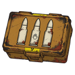
owner-review · HUMAN_CALIBRATION_PENDING, OWNER_APPROVAL_PENDING, VLM_DISAGREEMENT, VLM_LOW_CONFIDENCE
Three pale cartridges on compact ochre box; readable pickup emblem.
Local observations and source hash
mimo-9b:q8-64k: A single compact dirty ochre ammunition box shown in a three-quarter perspective, floating in a large empty magenta field. Its top panel displays three large ivory bullet silhouettes embossed in a row, with a bold white hand-shaped pickup icon on the center bullet. The box has a yellow radioactive hazard stripe across its front edge and a small yellow latch detail. The asset is flat-shaded with no cast shadow, occupying the middle half of the canvas with generous empty magenta margins on all four sides.
qwen3.8:27b-64k: A single compact, dirty ochre ammunition box with three large ivory bullet silhouettes embossed on its top, featuring a bold, readable pickup icon (a hand symbol) on the central bullet. The box is isolated and floating in a large, empty magenta field, with all pixels contained within the middle half of the canvas and generous empty margins on all four sides. The asset has strong shape definition suitable for 96 pixels and HUD clarity at 32 pixels, with flat, neutral material shading and no cast shadows, scene elements, or lettering.
178340a54b50c132d7f7cd58d6faca2725f822a4cd150c3d3105a82dede939e0repair
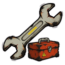
owner-review · HUMAN_CALIBRATION_PENDING, OWNER_APPROVAL_PENDING, VLM_LOW_CONFIDENCE
Large pale spanner with small rust tool case; readable repair silhouette.
Local observations and source hash
mimo-9b:q8-64k: A single chunky bone-grey open-ended wrench crosses diagonally over a small rusted orange toolbox, both isolated on a large empty magenta field. The wrench has two open ends, a long shaft with a yellow rectangular stripe, and black rust speckling. The toolbox is a small rusted orange case with a grey handle, latch, and a yellow triangular hazard symbol. The composition is a bold repair pickup icon with no letters.
qwen3.8:27b-64k: A single chunky bone-grey open-ended wrench crossed over a small rust toolbox, bold readable repair pickup icon, no letters. One SMALL isolated complete asset, floating in a large empty magenta field. All pixels within the middle HALF of the canvas; extremely generous empty margin on ALL four sides. Strong shape at 96 pixels, HUD at 32 pixels. Flat neutral material shading, no cast shadow, scene, car or lettering.
fa4ae9e0d47633695702899a92f9e6caa9f5528622c7cb20044eb126614d04c3cash
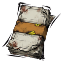
owner-review · HUMAN_CALIBRATION_PENDING, OWNER_APPROVAL_PENDING, VLM_LOW_CONFIDENCE
Bent pale stack with ochre band; no numerals or currency logo.
Local observations and source hash
mimo-9b:q8-64k: A compact stack of three dirty bleached bone rectangular currency notes held by a dirty ochre paper band, abstract blank notes with no monetary symbol, letters or numerals. One SMALL isolated complete asset, floating in a large empty magenta field. All pixels within the middle HALF of the canvas; extremely generous empty margin on ALL four sides. Strong shape at 96 pixels, HUD at 32 pixels. Flat neutral material shading, no cast shadow, scene, car or lettering.
qwen3.8:27b-64k: A compact stack of three bleached bone rectangular currency notes held by a dirty ochre paper band, abstract blank notes with no monetary symbol, letters or numerals. One SMALL isolated complete asset, floating in a large empty magenta field. All pixels within the middle HALF of the canvas; extremely generous empty margin on ALL four sides. Strong shape at 96 pixels, HUD at 32 pixels. Flat neutral material shading, no cast shadow, scene, car or lettering.
963a47820849d2e2b8b7950bfc097026a6f989923cd3a7e6c016e8d83ebab1e0mine
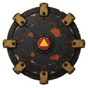
owner-review · HUMAN_CALIBRATION_PENDING, OWNER_APPROVAL_PENDING, VLM_DISAGREEMENT, VLM_LOW_CONFIDENCE
Dark circular mine crown, radial tabs and central generic warning symbol.
Local observations and source hash
mimo-9b:q8-64k: A round charcoal mechanical disc mine shown directly overhead, with six chunky dirty ochre rim lugs and a small dried-red centre cap bearing a yellow triangle warning symbol. The asset is isolated in a large empty magenta field.
qwen3.8:27b-64k: A round charcoal mechanical disc mine viewed directly overhead, featuring six chunky dirty ochre rim lugs and a small dried-red centre cap with a yellow triangle, floating in a large empty magenta field.
fddeb25e8feec859f1b212e72329302ab7ef4e89215e07e1d52153f0e0512cb6turbo
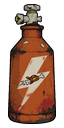
owner-review · HUMAN_CALIBRATION_PENDING, OWNER_APPROVAL_PENDING, VLM_LOW_CONFIDENCE
Rust bottle with pale lightning mark; recognizable boost pickup.
Local observations and source hash
mimo-9b:q8-64k: A compact rust-orange pressure bottle with a bone-grey valve assembly at top, a bold bleached bone lightning bolt across its body, and a small turbo pickup icon riding the bolt. The bottle floats in a large empty magenta field with generous margins on all four sides.
qwen3.8:27b-64k: A compact, rust-orange pressure bottle with a bone-grey valve assembly at the top. The bottle features a prominent, bleached-bone lightning bolt symbol on its side, which contains a small, stylized red car icon. The bottle has a weathered, textured appearance with visible rust spots and scratches. It is centered in a large, empty magenta field, with generous empty margins on all four sides. The lighting is flat and neutral, with no cast shadows or directional illumination.
1c3e3dc2d44d6dd1fb65a3cc555e6e1ee13270d18d0da48a3e4cde9045a83fc2skid
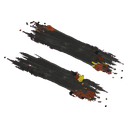
owner-review · HUMAN_CALIBRATION_PENDING, OWNER_APPROVAL_PENDING, VLM_LOW_CONFIDENCE
Broken parallel rubber streaks with small warm paint fragments; no enclosing physical plate.
Local observations and source hash
mimo-9b:q8-64k: Two long parallel charcoal tyre skid streaks on a flat magenta field, with broken uneven ends, sparse dark rubber flecks, and small brown and yellow debris patches. Flat overhead decal with no cast shadow, scene, car, or lettering.
qwen3.8:27b-64k: Two short parallel charcoal tyre skid streaks with uneven broken ends and sparse rubber flecks. Flat overhead ground decal only. One SMALL isolated complete asset, floating in a large empty magenta field. All pixels within the middle HALF of the canvas; extremely generous empty margin on ALL four sides. Strong shape at 96 pixels, HUD at 32 pixels. Flat neutral material shading, no cast shadow, scene, car or lettering. Strict directly overhead plan view; no visible front or side wall.
762396a2ad88d390c1fd7bc2ea9973b76529b52ad800ee7880e81f701d03997coil
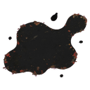
owner-review · HUMAN_CALIBRATION_PENDING, OWNER_APPROVAL_PENDING, VLM_LOW_CONFIDENCE
Irregular dark/rust oil marks; no raised panel, text or machine object.
Local observations and source hash
mimo-9b:q8-64k: A single irregular charcoal oil puddle with a flat asymmetrical filled shape, sparse soot-grey sheen, and several tiny detached droplets, floating in a large empty magenta field. No outlined container, no cast shadow, no scene, car, or lettering. Directly overhead plan view with no visible front or side wall.
qwen3.8:27b-64k: A single, irregular charcoal oil puddle with a flat, asymmetrical shape and sparse soot-grey sheen, featuring several tiny detached droplets. It floats in a large empty magenta field, with all pixels contained within the middle half of the canvas and generous empty margins on all four sides. The asset has strong shape at 96 pixels and HUD at 32 pixels, with flat neutral material shading and no cast shadow, scene, car, or lettering. The view is strictly directly overhead, with no visible front or side wall.
6ca0d41b54d4545cb4e250cd833acf735ddc4749d0b4255ea7071fb2570630e5scorch
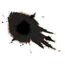
owner-review · HUMAN_CALIBRATION_PENDING, OWNER_APPROVAL_PENDING, VLM_DISAGREEMENT, VLM_LOW_CONFIDENCE
Corrected white-key source yields dark central blast and pale scraped rays; no pink halo.
Local observations and source hash
mimo-9b:q8-64k: A single flat ground scorch decal: an irregular charcoal-black dry-brush stain with a dense black centre, sparse short black abrasion flecks, uneven broken ends, and a faint warm-brown edge, isolated on a completely uniform pure white background with large empty white margins.
qwen3.8:27b-64k: A compact, asymmetrical charcoal black scorch decal with a dark center and irregular, dry-brush style edges, isolated on a pure white background with no shadows, gradients, or additional elements.
0572ba909522bd98861fa4f6a37bb036d382c7d18415271a8417b399aa9c5c78cracks
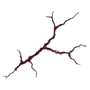
owner-review · HUMAN_CALIBRATION_PENDING, OWNER_APPROVAL_PENDING, VLM_LOW_CONFIDENCE
Thin broken branching cracks on transparency; no concrete panel.
Local observations and source hash
mimo-9b:q8-64k: A single small overhead ground decal of three thin branching near-black cracks with sparse grey edge chips, floating in a large empty magenta field. The crack cluster is centered in the middle half of the canvas with generous empty margins on all four sides. Flat neutral material shading, no cast shadow, no scene, car, or lettering. The crack cluster is the strong shape at roughly 96 pixels, with no visible HUD elements at 32 pixels.
qwen3.8:27b-64k: A small, asymmetrical cluster of thin, near-black branching cracks with sparse grey edge chips, appearing as a flat overhead ground decal. It is isolated in a large, empty magenta field, with all pixels contained within the middle half of the canvas and generous empty margins on all four sides. The asset features flat, neutral material shading with no cast shadows, scene elements, vehicles, or lettering, viewed from a strict directly overhead plan view.
e732fbc7b1c06ba3dcdc436003a01872a87fe6e25980e79b1f4c97e6ba006ba9impact
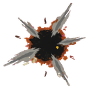
owner-review · HUMAN_CALIBRATION_PENDING, OWNER_APPROVAL_PENDING, VLM_LOW_CONFIDENCE
Radial pale/rust chips around dark hole; graphic impact decal.
Local observations and source hash
mimo-9b:q8-64k: A single flat overhead impact decal: a dark irregular central hole ringed by rust-brown debris, with five grey radial metal scrapes and small ivory chips, floating in a large empty magenta field.
qwen3.8:27b-64k: A small, isolated impact mark decal centered in a large magenta field. The mark features a dark, irregular center with five short, grey radial scrapes and tiny ivory chips, consistent with a metal impact. It is flat, overhead, and has no cast shadow, body, gore, or lettering.
7c42a85c9b7460e8a4d37f56670cc6c14b702226ea1f45f2b73c3b2f3a6b40ddgantry
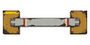
owner-review · HUMAN_CALIBRATION_PENDING, OWNER_APPROVAL_PENDING, VLM_DISAGREEMENT, VLM_LOW_CONFIDENCE
Simple pale beam and ochre end blocks; large readable track landmark.
Local observations and source hash
mimo-9b:q8-64k: A single overhead track gantry: a long thin bone-grey steel crossbeam with rust-orange warning bands at both ends, connecting two square dirty ochre end supports. Only top planes are visible, with no hanging sign, lettering, front wall, or cast shadow. The asset is isolated in a large empty magenta field, occupying the middle horizontal band with generous empty margins on all four sides.
qwen3.8:27b-64k: A single, isolated track gantry viewed from directly above, featuring a horizontal bone-grey steel crossbeam connecting two square, dirty ochre end supports. The crossbeam has small rust-orange and ivory warning bands near the ends. The asset is rendered with flat, neutral material shading and no cast shadows, floating in a large, empty magenta field with generous margins on all sides.
d39d251087876a91f5eb647c524c86cfdd8c00a697a0c82c719bdc56194395f1split-marker
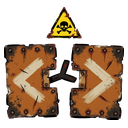
owner-review · HUMAN_CALIBRATION_PENDING, OWNER_APPROVAL_PENDING, VLM_LOW_CONFIDENCE
Opposing pale chevrons on two rust panels with generic warning triangle.
Local observations and source hash
mimo-9b:q8-64k: A flat overhead warning symbol: two rust plates with bleached-bone chevrons diverging left and right from a short central charcoal stem, plus a separate yellow triangular skull-and-crossbones warning sign above. The plates are isolated on a large empty magenta field with generous margins. The plates are shown as flat top surfaces with no visible front or side walls, consistent with a directly overhead plan view. The skull-and-crossbones sign is a separate overhead symbol, not a vehicle.
qwen3.8:27b-64k: A flat, stylized route-split marker composed of two rusted metal plates with white chevrons pointing left and right, connected by a central black stem. Above the plates is a yellow triangular warning sign with a black skull and crossbones symbol. The entire asset is centered on a solid magenta background with generous empty margins.
9e815396310a3dbb32cdd79b0586cbfd2b9c5c1f2feb34b4eef9503686951266stone-stack
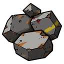
owner-review · HUMAN_CALIBRATION_PENDING, OWNER_APPROVAL_PENDING, VLM_DISAGREEMENT, VLM_LOW_CONFIDENCE
Angular grey overhead boulder pile, small ochre paint fragments.
Local observations and source hash
mimo-9b:q8-64k: A small compact pile of three angular slate-grey rocks of different sizes, seen directly from above. Faceted flat top planes, bold dark contours, neutral symmetric material shading, no cast shadow. One SMALL isolated complete asset, floating in a large empty magenta field. All pixels within the middle HALF of the canvas; extremely generous empty margin on ALL four sides. Strong shape at 96 pixels, HUD at 32 pixels. Flat neutral material shading, no cast shadow, scene, car or lettering. Strict directly overhead plan view; no visible front or side wall.
qwen3.8:27b-64k: A small, compact pile of three angular, slate-grey rocks of different sizes, viewed directly from above. The rocks feature faceted flat top planes, bold dark contours, and neutral, symmetric material shading with no cast shadows. The asset is isolated and floats in a large, empty magenta field, with all pixels contained within the middle half of the canvas, leaving generous empty margins on all four sides.
78da6361e5828aeb9286e2252d5ff0cbb055046648c094260b6e279d0657bd75sun-sign
owner-review · HUMAN_CALIBRATION_PENDING, OWNER_APPROVAL_PENDING, VLM_LOW_CONFIDENCE
Ochre square sign with rust sun pictogram; no text.
Local observations and source hash
mimo-9b:q8-64k: A flat square ochre route-warning plate with a rust-orange sun pictogram of eight short bone-grey rays around a solid rust-orange disc, four corner fasteners, chipped dark edges, and a short bone-grey support below, floating in a large empty magenta field.
qwen3.8:27b-64k: A flat, square ochre-colored plate with a simple sun pictogram in the center, featuring a solid rust-orange disc and eight short rays. The plate is mounted on a short, bone-grey support structure at the bottom. The entire asset is isolated and floating in a large, empty magenta field, with generous empty margins on all four sides. The image is a front-facing, flat sign icon with no visible letters, numbers, or brand markings.
401871f0172b4025ce0e41739d770fee3a48c27abc692abcaffd2da541f74096sluice
owner-review · HUMAN_CALIBRATION_PENDING, OWNER_APPROVAL_PENDING, VLM_DISAGREEMENT, VLM_LOW_CONFIDENCE
Three dark horizontal bars in rust square frame; open gaps.
Local observations and source hash
mimo-9b:q8-64k: A compact overhead water-control gate: a rectangular soot-grey steel plate with a narrow central dark-blue water slot, framed by two parallel grey rails and bolted corner brackets, floating in a large empty magenta field.
qwen3.8:27b-64k: A compact water-control gate viewed directly from above, featuring a rectangular soot-grey steel gate plate with visible rivets and weathered texture, positioned between two parallel grey rails. A narrow central slot reveals dark blue water. The asset is isolated and floating in a large empty magenta field, with all pixels contained within the middle half of the canvas and generous empty margins on all four sides. The rendering uses flat, neutral material shading with no cast shadows, vertical walls, or scene elements, consistent with a strict directly overhead plan view.
2e595de46990d9f62c98d01c4eb1e3a5bb5dd1bbd4ef0216b67dda2260e240b0snow-pole
owner-review · HUMAN_CALIBRATION_PENDING, OWNER_APPROVAL_PENDING, VLM_LOW_CONFIDENCE
Narrow red/bone striped pole with ochre triangular flag.
Local observations and source hash
mimo-9b:q8-64k: A compact alpine route marker icon: a narrow vertical post with rust-orange and bleached-bone banded sections, a small flat triangular ochre flag at its top bearing a skull-and-crossbones warning pictogram, and a short charcoal foot. The asset is isolated on a large empty magenta field, with generous empty margin on all four sides. The post is drawn as a narrow vertical element with no visible front or side wall, consistent with a directly overhead plan view. The flag is a flat triangular shape with no depth, lettering, or cast shadow. The overall style is flat neutral material shading with a hand-drawn illustrative treatment.
qwen3.8:27b-64k: A compact alpine route marker icon featuring a narrow vertical post with rust-orange and bleached-bone bands, topped with a small flat triangular ochre flag. The post has a short charcoal foot and displays a front-facing flat warning pictogram (skull and crossbones) on the flag. The asset is isolated, floating in a large empty magenta field, with no cast shadows, lettering, or scene elements.
fe5945178bac71c51db3b8b6c0c42dba084df793eaa0dd2fff3ce13756db2675muzzle
reject · FRAME_BOUNDARY, HUMAN_CALIBRATION_PENDING, OWNER_APPROVAL_PENDING, SUPERSEDED_SOURCE_REQUIRES_REPAIR, VLM_LOW_CONFIDENCE
Original retained for audit; use inspected derivative v4-fusion-effects-muzzle-layout-v1. All six complete flash shapes preserved and repositioned to regular cells with one shared scale. Actual exports have clear gutters and distinct ignition/peak/decay.
Local observations and source hash
mimo-9b:q8-64k: Six-frame horizontal sheet of stylized muzzle-flash bursts on uniform magenta, arranged in three columns and two rows with no visible separators. Reading order: tiny ivory ignition with small rust-orange sparks; medium rust-orange pointed burst with radiating spikes and black droplets; larger yellow-orange three-pronged flare with black splatter; large rust-orange burst with black base; two smaller side-by-side bursts (rust-orange and yellow); tiny rust-orange ember with black droplets. All frames are centered at consistent scale with broad magenta margins. No gun, muzzle, letters, numbers, logos, or watermarks are visible.
qwen3.8:27b-64k: A 2x3 grid of six abstract impact or explosion effects on a solid magenta background. The effects progress in size and complexity from a small white and black splatter in the top-left, to a medium rust-orange starburst, and a large yellow-gold flare in the top-right. The bottom row features a large rust-orange burst on the left, two small paired starbursts in the center, and a small rust-orange ember on the right. All shapes are jagged with black ink-splatter accents and thin radiating lines, consistent with a comic-book style muzzle flash or impact sequence.
f55abe1d1871381f9c30ca7dc87e8b6c374f8fcdd9aec7addad1e8dbeb737387Exact RGBA frames: 1 · 2 · 3 · 4 · 5 · 6
explosion
reject · FRAME_BOUNDARY, FRAME_CENTRE_DRIFT, HUMAN_CALIBRATION_PENDING, OWNER_APPROVAL_PENDING, SUPERSEDED_SOURCE_REQUIRES_REPAIR, VLM_DISAGREEMENT, VLM_LOW_CONFIDENCE
Original retained for audit; use inspected derivative v4-fusion-effects-explosion-layout-v1. Source six phases were two across by three down; complete shapes rearranged three across by two down. Actual exported phases retain ignition, burst, fireball and dissipating debris.
Local observations and source hash
mimo-9b:q8-64k: Six-frame comic explosion sheet on uniform magenta: compact ivory ignition with yellow sparks, rust-orange spiky starburst, large yellow radial blast, wide rust-orange fireball, dark rust-orange and grey breaking cloud, then small dissipating charcoal puff. No debris objects, letters, numbers, labels, or visible separators.
qwen3.8:27b-64k: A 2x3 grid of six comic-style explosion effects on a solid magenta background. The sequence progresses from a small white cloud with yellow sparks (top left), to a brown starburst (top right), a large yellow radial burst (middle left), a large orange fireball (middle right), a dark grey and brown cloud (bottom left), and finally a small dissipating spark effect (bottom right). No text, logos, or other objects are present.
0efd5598a44aebb0b3a15e693b68e54ca8bdf7feb99b2aac708753c26cfb7651Exact RGBA frames: 1 · 2 · 3 · 4 · 5 · 6
smoke
reject · HUMAN_CALIBRATION_PENDING, OWNER_APPROVAL_PENDING, SUPERSEDED_SOURCE_REQUIRES_REPAIR, VLM_DISAGREEMENT, VLM_LOW_CONFIDENCE, VLM_UNCERTAIN
Original retained for audit; use inspected derivative v4-fusion-effects-smoke-v2-layout-v1. Six complete smoke components regrouped into fixed cells. Pale billows and pointed drift fragments read clearly; strong stylization remains an owner taste question.
Local observations and source hash
mimo-9b:q8-64k: A six-panel comic-style effect sheet of grey cloud silhouettes on a saturated magenta background. The top row contains a small dark puff, a medium three-lobed cloud, and a large pale billow. The bottom row contains a thinner cloud, two curled wisps, and one small visible wisp. Each cloud is flat painted grey with only two tonal values. The layout has three images across the top row and three across the bottom row. Every image occupies only the central third of its invisible equal cell, with wide empty space. Background is one continuous pure saturated magenta. There is no grid, panels, border, decoration, physical object, scene, or lettering. No image crosses a cell boundary. The six visible phases are centred and isolated.
qwen3.8:27b-64k: The image displays six stylized cloud or smoke-like shapes arranged in two rows of three against a solid magenta background. The top row features a small dark puff, a medium three-lobed cloud, and a large pale billow with pointed extensions. The bottom row includes a thinner cloud, two curled wisps, and one small visible wisp. The shapes are rendered in shades of grey with some brownish accents and small yellow specks, giving them a textured, somewhat gritty appearance. The overall style is cartoonish and abstract, with no clear indication of a specific subject or context.
235d7db69f8ac2656a3c6fee7f0ab6631f61af040224deb37a9a2fb420d0213aExact RGBA frames: 1 · 2 · 3 · 4 · 5 · 6
sparks
reject · FRAME_BOUNDARY, HUMAN_CALIBRATION_PENDING, OWNER_APPROVAL_PENDING, SUPERSEDED_SOURCE_REQUIRES_REPAIR, VLM_DISAGREEMENT, VLM_LOW_CONFIDENCE, VLM_UNCERTAIN
Original retained for audit; use inspected derivative v4-fusion-effects-sparks-v2-layout-v1. Six hard-edged spark sprays; no residual smoke clouds. Whole components assigned to phase centres with one common scale; actual exports inspected.
Local observations and source hash
mimo-9b:q8-64k: A 2x3 effect sheet of six isolated spark-spray bursts on a continuous saturated magenta background. Each burst is a central dark orange/rust core with radiating hard-edged rays and small ivory or yellow dots. The top row shows three progressively larger bursts; the bottom row shows a large yellow-rayed burst, a medium rust burst, and a small rust burst. No grid, panels, borders, lettering, or physical objects are visible. The background is a uniform magenta field with no cast shadows or one-sided lighting.
qwen3.8:27b-64k: The image displays six abstract spark spray effects arranged in a 2x3 grid (two rows, three columns) on a solid magenta background. The effects vary in color (ivory, yellow, orange, rust) and size, with radiating lines and central splatters. The layout matches the requested grid structure, and the background is a continuous saturated magenta color without any visible grid lines, borders, or other objects.
8faeeff1fc144949a22668c33fc8ada12b56b0fe6f973e476003cf18b95e4580Exact RGBA frames: 1 · 2 · 3 · 4 · 5 · 6
fire
reject · FRAME_BOUNDARY, HUMAN_CALIBRATION_PENDING, OWNER_APPROVAL_PENDING, SUPERSEDED_SOURCE_REQUIRES_REPAIR, VLM_DISAGREEMENT, VLM_LOW_CONFIDENCE
Original retained for audit; use inspected derivative v4-fusion-effects-fire-repaint-v1. Offline repaint of previously valid original overhead fire phases after three rejected generated attempts. Five fusion palette roles and sparse hatching; original alpha and pivots preserved. No fourth generation and no claim of a newly generated source.
Local observations and source hash
mimo-9b:q8-64k: A 3x2 sheet of six overhead radial orange fire-pool illustrations on a continuous saturated magenta background. Top row: compact three-point star, four-point curled star, wide six-point orange ring. Bottom row: compact off-centre curl, broad clockwise radial swirl, compact three-point star again. All flames spread outward on the ground plane with no upright candle flame, side-view tongue, or burning object. Each image occupies only the central third of its cell with wide empty space. No grid, panels, borders, decoration, physical object, scene, or lettering is present.
qwen3.8:27b-64k: The image displays six distinct orange fire effect assets arranged in a 2x3 grid (two rows, three columns) against a solid magenta background. The assets include a three-point star, a four-point curled star, a six-point ring, a compact curl, a broad radial swirl, and another three-point star. All elements are isolated, centered within their respective grid positions, and feature no text, logos, or other prohibited details.
45914e1743f1c93b094432096c25d1969ba90083d41511b496fff04fc4f8e5a5Exact RGBA frames: 1 · 2 · 3 · 4 · 5 · 6
frame-health
owner-review · HUMAN_CALIBRATION_PENDING, OWNER_APPROVAL_PENDING, VLM_LOW_CONFIDENCE
Corrected empty health frame: pale chipped border with rust end cap; removed aircraft graphic. Transparent interior confirmed.
Local observations and source hash
mimo-9b:q8-64k: A single empty rectangular health-bar frame with a battered bone-metal outer border, dark inner recessed frame, and a small red end cap with yellow markings on the right side, centered on a pure magenta background.
qwen3.8:27b-64k: A single, empty rectangular frame with a battered, bone-white metal texture and rust spots, centered on a solid magenta background. The frame features a dark inner border and a small red and yellow striped cap on the right side. The interior of the frame and the entire background are uniform pure magenta, with no other objects, text, or shadows present.
dbd17e3c3a86fa8839b6874fbe15e301e89e1936f81cd5f5be0767dc0acc1343frame-turbo
owner-review · HUMAN_CALIBRATION_PENDING, OWNER_APPROVAL_PENDING, VLM_DISAGREEMENT, VLM_LOW_CONFIDENCE, VLM_UNCERTAIN
Corrected empty turbo frame: pale border with orange end cap; removed aircraft graphic. Transparent interior confirmed.
Local observations and source hash
mimo-9b:q8-64k: A worn rectangular metal frame with an orange end cap on the right, four horn-like protrusions, and a magenta interior opening, centered on a magenta background.
qwen3.8:27b-64k: A worn, rectangular metal frame with a white and rusted orange border is centered on a solid magenta background. The frame has a dark inner rim and a hollow center that matches the background color. Sharp, claw-like metal spikes protrude from the four corners of the frame. The surface shows signs of wear, including scratches, chipped paint, and rust spots, particularly on the right side and bottom left corner.
c3b55f1d336f4f794d21abecc4cd0207959a26451ba3a50d31d42ffb76ad3accframe-panel
owner-review · HUMAN_CALIBRATION_PENDING, OWNER_ACCEPTANCE_PENDING, OWNER_APPROVAL_PENDING
Corrected empty square panel: soot frame, small ochre hazard marks; removed aircraft graphic. Transparent interior confirmed.
Local observations and source hash
mimo-9b:q8-64k: A worn rectangular metal frame with four clipped corners, a dark inner border, and a large magenta interior opening, centered on a magenta background. Small yellow warning labels and rust wear are visible on the frame.
qwen3.8:27b-64k: A single, empty rectangular frame with a worn, rusted metal border and clipped corners is centered on a uniform magenta background. The interior of the frame is also pure magenta, matching the background. There are no other objects, text, or decorations present.
f0dcdc91aa4f2e181e34c35bbf371b84d2eaa8aca08a57488b4aad933e6991f9icon-armour
owner-review · HUMAN_CALIBRATION_PENDING, OWNER_APPROVAL_PENDING, VLM_LOW_CONFIDENCE
Pale shield with ochre centre, small generic warning pictogram.
Local observations and source hash
mimo-9b:q8-64k: A bold ivory shield icon with a bone-grey border and a dirty ochre central plate, floating in a large empty magenta field. The shield has a strong pointed top and rounded bottom, with a thick bone-grey outer rim and a smaller ochre inner plate. The ochre plate is heavily weathered with dark brown and black grime, scratches, and chipped edges. A small yellow triangular warning symbol with a black exclamation mark is centered on the ochre plate. The icon is flat with no cast shadow, and the magenta background is uniform and empty.
qwen3.8:27b-64k: A single, bold, simple shield icon with an ivory body and a bone-grey border. The central plate is dirty ochre with visible grime and scratches. A small yellow warning triangle with an exclamation mark is present on the central plate. The icon floats in a large, empty magenta field, with generous empty margins on all four sides. The shield is centered within the middle half of the canvas. The material shading is flat and neutral, with no cast shadow, scene, car, or lettering.
a7f02c292c22b6a1721b7ca85fc582c94b1fd48e2ad2f76d921f21df44e07a56icon-engine
owner-review · HUMAN_CALIBRATION_PENDING, OWNER_APPROVAL_PENDING, VLM_LOW_CONFIDENCE
Four rust pistons on pale block; distinct engine silhouette.
Local observations and source hash
mimo-9b:q8-64k: A bold simplified engine block icon: a bone-grey mechanical block with four rust-orange cylinders, a dark base, and a magenta background.
qwen3.8:27b-64k: A bold, simplified engine block icon featuring a bone-grey mechanical base with four rust-orange cylinders and a dark lower section. The asset is isolated and floating in a large, empty magenta field, with generous empty margins on all four sides. The design uses flat, neutral material shading with no cast shadows, scene elements, or lettering.
265315b7025f5f5c95372358b00eb561cf634241a13f9c06167439e6cab38d0ficon-handling
owner-review · HUMAN_CALIBRATION_PENDING, OWNER_APPROVAL_PENDING, VLM_LOW_CONFIDENCE
Pale three-spoke steering wheel with dark hub.
Local observations and source hash
mimo-9b:q8-64k: A bold bleached bone steering wheel icon with three spokes and a charcoal central hub, floating in a large empty magenta field. The wheel is shown front-on with a thick bone-colored rim, three spokes, and a dark central hub. The rim and spokes have distressed, chipped edges revealing rust-brown and dark tones beneath the bone paint. The central hub is charcoal with a circular pattern and small orange-brown fasteners around its perimeter. A small yellow triangular warning symbol is visible on the upper spoke. The wheel is centered in the frame with generous magenta margins on all sides. The material shading is flat and neutral with no cast shadow.
qwen3.8:27b-64k: A single, isolated steering wheel icon rendered in a flat, cel-shaded style. The wheel features a bleached bone or off-white rim and three spokes, with a dark charcoal central hub secured by visible bolts. The surface shows signs of wear, including chipped paint and rust-like brown patches. The icon is centered on a solid, vibrant magenta background with generous empty margins on all sides. There are no cast shadows, gradients, or other scene elements.
6fd93b437562563fb22ec309624db576454eefd113cfbb087cbe1abc22281399icon-light-gun
owner-review · HUMAN_CALIBRATION_PENDING, OWNER_APPROVAL_PENDING, VLM_DISAGREEMENT, VLM_LOW_CONFIDENCE
Twin narrow barrels on ochre mounting plate.
Local observations and source hash
mimo-9b:q8-64k: A single stylized twin-barrel light-gun weapon icon floating on a flat magenta background. Two short dark grey parallel barrels point to the right, mounted on a dirty ochre angular base with a rear fin. The barrels have yellow bands and dark muzzle openings. The ochre mount shows heavy grime, scratches, and chipped paint. There is no cast shadow. The subject is centered with generous empty magenta margin on all four sides.
qwen3.8:27b-64k: A bold, simplified icon of a twin light-gun with two short grey parallel barrels pointing to the right, mounted on a dirty ochre base. The asset is isolated and floating in a large empty magenta field, with all pixels contained within the middle half of the canvas and generous empty margins on all four sides. The shading is flat and neutral, with no cast shadows, scene elements, or lettering.
540cfbf1a9ea1d27dd9b5e607c40d45870f8caeb57eebea706f88a7e36c237b4icon-heavy-gun
owner-review · HUMAN_CALIBRATION_PENDING, OWNER_APPROVAL_PENDING, VLM_DISAGREEMENT, VLM_LOW_CONFIDENCE
Single wide dark barrel on chunky rust mounting plate.
Local observations and source hash
mimo-9b:q8-64k: A bold simplified heavy cannon icon: a thick long dark grey barrel pointing right, mounted on a rust-orange angular base with a red side panel, cream rust patches, and small yellow accents. The asset floats in a large empty magenta field with generous margins on all four sides. Flat neutral cel-style shading with no cast shadow, no lettering, no bullets, and no visible occupant.
qwen3.8:27b-64k: A bold, simplified heavy cannon icon with a thick, long grey barrel pointing to the right, mounted on a rust-orange base. The asset is isolated and floats in a large, empty magenta field, with generous empty margins on all four sides. The design features flat, neutral material shading with no cast shadows, scene elements, or lettering.
7b9042065b80df1e8eaf19d0fe9d5a78de4b9e9bc431c91e1bacb3b8d0f25910icon-fuel
owner-review · HUMAN_CALIBRATION_PENDING, OWNER_APPROVAL_PENDING, VLM_LOW_CONFIDENCE
Red fuel can with pale drop symbol, no lettering.
Local observations and source hash
mimo-9b:q8-64k: A compact dried-red fuel can icon with a grey cap, simple ivory droplet on its face, no letters or numerals.
qwen3.8:27b-64k: A compact, dried-red fuel can icon with a grey cap and a simple ivory droplet on its face, floating in a large empty magenta field. The asset is isolated, with no letters, numerals, logos, or watermarks, and features flat neutral material shading without cast shadows or scene elements.
a41c50d8619de84b45a3c5ed075c1d273b3ad98e8a92dd546d14be66f387901bscatter
owner-review · HUMAN_CALIBRATION_PENDING, OWNER_APPROVAL_PENDING, VLM_DISAGREEMENT, VLM_LOW_CONFIDENCE, VLM_UNCERTAIN
Short pale muzzle and several projectile dots; compact spread-weapon emblem.
Local observations and source hash
mimo-9b:q8-64k: A bold flat side-view weapon icon: a bone-grey barrel with rust-red and dark grunge patches points RIGHT, mounted on a compact rust-red angular base with a yellow diagonal stripe. Three small ivory pellet dots spread toward the right. The asset floats in a large empty magenta field with generous margins on all four sides. Flat neutral cel shading with no cast shadow, no perspective, no letters or numerals.
qwen3.8:27b-64k: A stylized, cartoonish cannon or spread-shot weapon icon is depicted against a solid magenta background. The weapon features a short, wide barrel with a bone-grey and rust-red color scheme, mounted on a compact, rust-colored base with a yellow diagonal stripe. The barrel is pointing to the right, and a cluster of small, ivory-colored pellet dots is shown spreading out from the muzzle, indicating a spread-shot action. The illustration has a bold, flat design with strong outlines and a distressed, weathered texture on the metal surfaces. The overall style is reminiscent of a video game icon or a comic book element.
08917069822d2c5c063b84f6b11dd988a02766098ededcf5f4b12a9e2604377aspikes
owner-review · HUMAN_CALIBRATION_PENDING, OWNER_APPROVAL_PENDING, VLM_DISAGREEMENT, VLM_LOW_CONFIDENCE
Pale triangular spike on rust plate; bold directional silhouette.
Local observations and source hash
mimo-9b:q8-64k: A single flat comic-style armored ram plate icon floating in a large empty magenta field. The short rust-orange armored plate has dark chunky outlines, black mechanical brackets, and four large bone-grey triangular spikes pointing RIGHT. Small yellow accent strips appear on the plate. The asset is centered with generous empty magenta margin on all four sides. No vehicle, lettering, watermark, or occupant is present.
qwen3.8:27b-64k: A rust-orange armored ram plate with three large bone-grey triangular spikes pointing right, set against a magenta background.
983e75bdc6714128bf44b773ca809b8588c262e34381ec65de11a0e76ce5e8cfsabotage
owner-review · HUMAN_CALIBRATION_PENDING, OWNER_APPROVAL_PENDING, VLM_DISAGREEMENT, VLM_LOW_CONFIDENCE
Open ammo crate with two curved pale arrows; readable swap/sabotage concept.
Local observations and source hash
mimo-9b:q8-64k: A bold flat icon of a compact dirty ochre ammunition box with a hinged lid propped open, containing two ivory bullet silhouettes with red bands. Two curved bleached-bone exchange arrows surround the box: one clockwise above and one returning below. The background is a large empty magenta field. The icon is centered with generous empty margins on all four sides.
qwen3.8:27b-64k: A flat, stylized icon of a dirty ochre ammunition box with its lid open, revealing two white bullets with red bands inside. The box is surrounded by two curved, bleached-bone colored arrows forming a circular exchange symbol, one pointing clockwise above and one returning below. The entire asset is centered in a large, empty magenta field with generous margins on all sides. No letters, numbers, logos, or other details are present.
04db9b667961ce0b7a0fe2064d17d85d4dfaf13f96dc1f594cd87ecf95ee9a74industrial
owner-review · HUMAN_CALIBRATION_PENDING, OWNER_APPROVAL_PENDING, VLM_DISAGREEMENT, VLM_LOW_CONFIDENCE
Peripheral pipes and slabs frame a quiet dark centre; overhead, no horizon.
Local observations and source hash
mimo-9b:q8-64k: Overhead painted industrial yard: dark cracked concrete centre, ochre storage roofs at corners, rust-red pipes and gantry feet near edges, sparse orange debris, no directional lighting
qwen3.8:27b-64k: An overhead view of an abandoned industrial yard with a dark concrete center, rusted pipes and steel structures along the edges, and muted ochre-colored storage roofs. The scene is quiet with sparse details and no visible cars, text, or branded objects.
b95702f620af2e932bf32a3c8f34cc060459ae145b2051d8743665b51ad5bf83quarry
owner-review · HUMAN_CALIBRATION_PENDING, OWNER_APPROVAL_PENDING, VLM_DISAGREEMENT, VLM_LOW_CONFIDENCE
Angular ochre/rust rocks around a quiet grey centre; overhead quarry bowl.
Local observations and source hash
mimo-9b:q8-64k: A directly overhead painted stone quarry: a large quiet grey-brown gravel floor fills the centre, surrounded by angular terraced rock shelves in ochre, red, grey and dark charcoal. Sparse dirty ochre scrub clusters sit along the outer edges, with a few small slate piles near the perimeter. The composition is symmetric cel-shaded with no cast ground shadow and no obvious one-sided illumination.
qwen3.8:27b-64k: A top-down view of a stone quarry or excavation site. The center is a large, flat area of grey-brown gravel and dirt. This central void is surrounded by terraced, angular rock shelves in shades of ochre, red, and dark grey. Small piles of slate and rocks are scattered near the outer edges, and sparse, dirty ochre scrub vegetation grows in the cracks. The lighting is neutral and diffuse, with no strong directional shadows, consistent with an overhead painted setting.
edb632b00e9d48b5589b7dd8ff4c1193391547a97e81913b42a3126dbe7348b3desert
owner-review · HUMAN_CALIBRATION_PENDING, OWNER_APPROVAL_PENDING, VLM_DISAGREEMENT, VLM_LOW_CONFIDENCE
Corrected overhead ochre expanse with sparse peripheral rock/brush; central wrecks removed.
Local observations and source hash
mimo-9b:q8-64k: A square overhead painted desert scene with a warm ochre sand field filling the centre, a quiet mid-dark open area, and angular rust-red rock clusters plus dark scrub patches arranged around the perimeter. Small pale stones and sparse dark specks are scattered across the sand. The composition is symmetric and evenly lit with no cast shadows, directional light, vehicles, text, or logos.
qwen3.8:27b-64k: A top-down view of a dry desert landscape with a warm ochre sand center. Angular rust-colored rocks and dark scrub patches are scattered around the outer edges, creating a quiet, muted atmosphere with no visible directional lighting or shadows.
6045776e903c168c31562a49355556d584f5c01d5ee3261b95cb6de834a0fff2wetland
owner-review · HUMAN_CALIBRATION_PENDING, OWNER_APPROVAL_PENDING, VLM_DISAGREEMENT, VLM_LOW_CONFIDENCE
Dark soil/water flow through ochre reeds and a peripheral grate; centre reasonably quiet.
Local observations and source hash
mimo-9b:q8-64k: A square overhead painted setting tile showing a dark grey-green packed-earth centre with irregular soot-grey shallow-water channels and dirty ochre reeds clustered near the outer edges. Sparse perimeter detail includes ochre reed tufts, small bones, stones, a rusted metal grate, and a few small yellow fragments. The composition is quiet and mid-dark in the centre with sparse perimeter detail. No cars, text, or branded objects are visible.
qwen3.8:27b-64k: An original wetland industrial fringe seen directly overhead: dark grey-green packed-earth open centre, irregular soot-grey shallow-water channels and dirty ochre reeds near the outer edges. Quiet mid-dark centre with sparse perimeter detail. Original overhead painted setting, no cars, text or branded objects, no directional lighting.
143b8d4daaf30ffdc94e2aaf55b045267145c26a2239a15519f51e069396613ealpine
owner-review · HUMAN_CALIBRATION_PENDING, OWNER_APPROVAL_PENDING, VLM_DISAGREEMENT, VLM_LOW_CONFIDENCE
Pale peripheral boulders and small ochre roof, quiet dark centre; no horizon.
Local observations and source hash
mimo-9b:q8-64k: A top-down painted overhead scene of a quiet mountain proving ground. The centre is a large soot-grey frosted gravel surface with scattered pale stones, faint cracks, and dark soot patches. Angular bone-grey rock shelves form a sparse perimeter ring around the open centre, with small bleached-bone snow patches and sparse dark ochre dwarf conifers near the outer edges. A flat roof-only plan view of a rectangular utility structure sits in the upper-right area, with no visible vertical side doors or front grille. The lighting is completely flat and even with no cast shadows. The composition is quiet mid-dark in the centre with sparse perimeter detail.
qwen3.8:27b-64k: A top-down view of a desolate, high-altitude proving ground. The center is an open area of soot-grey frosted gravel with a quiet mid-dark tone. The perimeter is defined by angular, bone-grey rock shelves and scattered small patches of bleached-bone snow. Sparse, dark dirty ochre dwarf conifers are visible near the outer edges. A single utility structure is present in the upper right quadrant, depicted in a roof-only plan view with a rusted yellow and brown surface. The scene is an original overhead painted setting with no cars, text, or branded objects. While the lighting is generally even, there are distinct dark, soft-edged patches on the ground that function as cast shadows or ground stains, preventing a classification of completely flat even light without cast shadows.
73b93905a344623bd0008040fb67aea07290bdcc16c25a9f2ee597d8b7e6201bmuzzle
owner-review · HUMAN_CALIBRATION_PENDING, OWNER_APPROVAL_PENDING, VLM_DISAGREEMENT, VLM_LOW_CONFIDENCE
All six complete flash shapes preserved and repositioned to regular cells with one shared scale. Actual exports have clear gutters and distinct ignition/peak/decay.
Play six exported phases
Local observations and source hash
mimo-9b:q8-64k: Six-frame magenta-background sheet of a muzzle-flash effect sequence, no gun visible. Reading order: (1) small ivory/cream ignition blob with dark speckle; (2) rust-orange pointed burst with dark core and small yellow dot; (3) larger tan/orange three-pronged flare with dark base and yellow sparks; (4) wide orange three-pronged flare with dark base and yellow sparks; (5) two smaller flares side by side, one orange one tan, with yellow sparks; (6) small rust-orange ember blob with dark speckle. All cells are equal square magenta areas with no separators, no text, no numbers, no logos, and no visible occupant.
qwen3.8:27b-64k: A 2x3 grid of six distinct frames on a uniform magenta background, depicting a sequence of muzzle flash effects. The frames show various stages of a burst, including a small ivory ignition, a rust-orange pointed burst, a wide three-pronged flare, a shorter yellow flare, two small sparks, and a tiny rust-orange ember. All frames are centered in their respective cells with no visible separators, and the effects are rendered with a consistent style and scale.
c8e2be9357c41f0414ef1cb3c9ae46b40ce374889d0095ac0f5c0219da63c465Exact RGBA frames: 1 · 2 · 3 · 4 · 5 · 6
metal
owner-review · HUMAN_CALIBRATION_PENDING, OWNER_APPROVAL_PENDING, VLM_LOW_CONFIDENCE
Fixed centre crop removes the generated metal frame. Fine grey scratches remain; no rivets or border.
2×2 repeatLocal observations and source hash
mimo-9b:q8-64k: A seamless cool grey matte industrial steel tile with sparse irregular fine scratches, subtle dry-brush grain, and quiet large values. No rivet grid, checker pattern, large panels, cracks, lighting gradient, focal motif, frame, border, road line, car, prop, object, lettering, ink perimeter, or scene. Single unrepeated stochastic field with seamless edges.
qwen3.8:27b-64k: A uniform cool grey matte industrial steel surface with sparse irregular fine scratches and subtle grain, no rivet grid, checker pattern, large panels, or focal motifs. The lighting is neutral with no cast shadows or one-sided illumination, and the edges appear seamless without any repeated patterns or borders.
b36b74c983befea8093e512f176f44f4d10eaca2f724a0207e0211ae7980e782ice

owner-review · HUMAN_CALIBRATION_PENDING, OWNER_APPROVAL_PENDING, VLM_LOW_CONFIDENCE
Fixed centre crop removes framed perimeter; quiet pale granular surface.
2×2 repeatLocal observations and source hash
mimo-9b:q8-64k: A seamless painted bone-grey concrete tile with fine dry-brush grain, faint pale frost-like speckling, scattered dark flecks, and subtle warm ochre and rust-brown staining. No border, frame, cracks, or directional lighting gradient is visible.
qwen3.8:27b-64k: The image displays a uniform, low-contrast bone-grey surface with a fine, dry-brush grain texture. It appears as a single, seamless material field with no distinct objects, borders, or directional lighting. There are no visible cracks, logos, or focal motifs, consistent with a neutral, empty painted material tile.
41fb648bc2d4a22ba1c659803f425cf5ec37a3e1656c1a996bccc329adf96981asphalt-clean
owner-review · HUMAN_CALIBRATION_PENDING, OWNER_APPROVAL_PENDING, VLM_LOW_CONFIDENCE
Fixed centre crop removes dark perimeter; sparse aggregate remains.
2×2 repeatLocal observations and source hash
mimo-9b:q8-64k: A seamless dark soot-asphalt tile with sparse tiny aggregate flecks, subtle dry-brush grain, and quiet large-value variation. No cracks, road line, car, prop, lettering, watermark, or border are visible. The field is uniform and non-repeating across the frame.
qwen3.8:27b-64k: A dark, near-uniform field of soot asphalt with tiny sparse aggregate and fine dry-brush grain. No cracks, objects, text, or distinct features are visible.
f816f7a2dd1210ac57d6d938eea7ba99ef38fa60a34ed4d2f0b8422fd65fbcf3gravel

owner-review · HUMAN_CALIBRATION_PENDING, OWNER_APPROVAL_PENDING, VLM_LOW_CONFIDENCE
Dense small dark pebbles; eight-pixel wrap repair removes the seam. Busier than dirt; use for distinct gravel patches.
2×2 repeatLocal observations and source hash
mimo-9b:q8-64k: A seamless painted material tile showing a warm ochre field densely scattered with fine dark soot-like stones and small pale flecks, with subtle dry-brush grain and no visible frame, border, or focal motif.
qwen3.8:27b-64k: A uniform, seamless field of fine, irregular ochre and soot-colored stones densely packed together. The texture features a subtle dry-brush grain with quiet, even values and no large rocks, cracks, or focal motifs. The distribution is stochastic and anonymous, with no visible borders, objects, or lighting gradients.
d9540f8f0edcbda0aab615ba8a22d69565772d0379f09ce439f20c08e19b5c5dexplosion
owner-review · HUMAN_CALIBRATION_PENDING, OWNER_APPROVAL_PENDING, VLM_DISAGREEMENT, VLM_LOW_CONFIDENCE
Source six phases were two across by three down; complete shapes rearranged three across by two down. Actual exported phases retain ignition, burst, fireball and dissipating debris.
Play six exported phases
Local observations and source hash
mimo-9b:q8-64k: A six-frame comic explosion sheet arranged in three columns and two rows of equal square magenta cells with no visible separators. Reading order: a compact ivory ignition cloud with yellow sparks; a rust-orange starburst with dark spikes; a large yellow-rust-orange radial blast with dark rust-orange and grey breaking cloud; a wide rust-orange fireball with dark grey cloud lobes; a larger rust-orange and grey breaking cloud; and a small dissipating charcoal puff with a few green-grey fragments. All frames are centred at fixed camera and scale with broad uniform magenta space between them and at the sheet border. No debris objects, letters, numbers, labels, or watermarks are visible.
qwen3.8:27b-64k: A 2x3 grid of six explosion animation frames on a solid magenta background. The sequence progresses from a small white smoke puff to a large yellow starburst, followed by a wide rust-orange fireball, a dark grey and rust cloud, and finally a dissipating state with only small debris particles visible.
117a7fc8e8e1850679d7eceaed910e463829320a87ad6a216a2db6c5ce4c3698Exact RGBA frames: 1 · 2 · 3 · 4 · 5 · 6
smoke
owner-review · HUMAN_CALIBRATION_PENDING, OWNER_APPROVAL_PENDING, VLM_DISAGREEMENT, VLM_LOW_CONFIDENCE
Six complete smoke components regrouped into fixed cells. Pale billows and pointed drift fragments read clearly; strong stylization remains an owner taste question.
Play six exported phases
Local observations and source hash
mimo-9b:q8-64k: A six-panel comic-style cloud effect sheet on a saturated magenta background. The six visible phases are arranged in three columns and two rows: a small dark puff with a curled wisp at top left; a medium three-lobed cloud with pointed lower tendrils at top center; a large pale billow with long pointed spikes at top right; a broad grey cloud with sharp spikes at bottom left; two curled wisps at bottom center; and a small cloud with a pointed tail at bottom right. Each cloud is flat painted grey with only two tonal values, separated by black outlines. The clouds are isolated in the central third of their cells with wide empty magenta space around them. No grid, panels, borders, decoration, physical objects, scenes, or lettering are visible. The clouds are not pink-tinted and show no translucent glow. The background is one continuous pure saturated magenta field. No image crosses a cell boundary.
qwen3.8:27b-64k: The image displays six distinct cloud-like shapes arranged in a 2x3 grid on a solid magenta background. The shapes are rendered in shades of grey with dark outlines and some brownish-orange accents, appearing as stylized smoke or cloud puffs. They vary in size and form, including small puffs, larger billows, and wispy trails, consistent with an effect sheet for animation or game assets.
9b443ed20d8a96157003d529e756abaf96863b95e4c80e04f75725cadffaad60Exact RGBA frames: 1 · 2 · 3 · 4 · 5 · 6
sparks
owner-review · HUMAN_CALIBRATION_PENDING, OWNER_APPROVAL_PENDING, VLM_DISAGREEMENT, VLM_LOW_CONFIDENCE, VLM_UNCERTAIN
Six hard-edged spark sprays; no residual smoke clouds. Whole components assigned to phase centres with one common scale; actual exports inspected.
Play six exported phases
Local observations and source hash
mimo-9b:q8-64k: A 3x2 effect sheet of six isolated spark-spray bursts on a continuous saturated magenta background. Each burst is a central irregular orange/rust core with radiating hard-edged rays in yellow, orange, rust-orange, and red tones. The top row shows a small ivory-white core with short yellow strokes, a mid-size orange core with sparse yellow rays, and a larger rust-orange core with long yellow-orange rays. The bottom row shows a large yellow-rayed core, a mid-size rust core with orange rays, and a small rust core with short rays. All six are centred within their cells with wide empty magenta space around them. No grid, panels, borders, lettering, or physical objects are visible.
qwen3.8:27b-64k: The image displays six spark spray effects arranged in a 3x2 grid on a pure magenta background. The effects are hard-edged and isolated, with no smoke clouds, pink glow, or other elements. The layout matches the brief's requirement for three columns and two rows, with each effect centered in its cell. The background is continuous and unbroken, with no grid, panels, or decorations. The effects are distinct and do not cross cell boundaries.
acd83500df1218a4c79502e3d1c2a79e32c53d32e8e89b1f8919cd9d86aee94dExact RGBA frames: 1 · 2 · 3 · 4 · 5 · 6
fire
owner-review · HUMAN_CALIBRATION_PENDING, OWNER_APPROVAL_PENDING, VLM_DISAGREEMENT, VLM_LOW_CONFIDENCE, VLM_UNCERTAIN
Offline repaint of previously valid original overhead fire phases after three rejected generated attempts. Five fusion palette roles and sparse hatching; original alpha and pivots preserved. No fourth generation and no claim of a newly generated source.
Play six exported phases
Local observations and source hash
mimo-9b:q8-64k: A sheet of six overhead fire frames arranged in two rows of three on a saturated magenta background. Each frame shows a stylized fireball with a dark brown/black outline, a rust-orange outer flame body, and an ivory/cream inner core. The six frames vary in silhouette and phase: top-left is a compact four-lobed flame with a cross-shaped core; top-middle is a rounder flame with a large irregular core; top-right is a wide flame with a split core; bottom-left is a round flame with a curling tail rising from the top; bottom-middle is a round flame with a curling tail entering from the right; bottom-right is a smaller four-lobed flame with a star-shaped core. The frames are evenly spaced with generous magenta margins. No ground shadow, cast shadow, or one-sided illumination is visible; the shading is flat and symmetric. No letters, numbers, logos, watermarks, or vehicle occupants are present.
qwen3.8:27b-64k: The image displays six stylized, circular objects arranged in a 2x3 grid against a solid magenta background. These objects appear to be overhead views of fire or flame elements, characterized by brown, rust-colored outer rings and ivory or ochre inner cores. The shapes vary slightly, with some featuring spiral or curved extensions, suggesting different phases or states of the fire. The style is consistent with a pixel art or cel-shaded aesthetic, and there are no visible shadows or directional lighting, indicating neutral lighting. The objects do not contain any letters, numbers, logos, or watermarks, and there are no vehicles or occupants present.
c79c0ea17fd02b48d179507c3651c2139eebf984f925157df0dabcd967776f1bExact RGBA frames: 1 · 2 · 3 · 4 · 5 · 6
soft-dune
owner-review · HUMAN_CALIBRATION_PENDING, OWNER_APPROVAL_PENDING, VLM_LOW_CONFIDENCE
Low crescent sand shape. Visible magenta fringe repainted from adjacent clean sand colours; original rejected. Drag footprint supplied.
Local observations and source hash
mimo-9b:q8-64k: A single isolated low crescent-shaped patch of loose ochre sand with sparse darker scuffed grain, broken soft feathered perimeter, and small detached sand fragments around its edge, floating in a large empty magenta field.
qwen3.8:27b-64k: A small, isolated crescent-shaped patch of loose ochre sand with a soft, feathered perimeter and sparse scuffed grain texture, floating in a large empty magenta field. The asset is positioned in the middle half of the canvas with generous empty margins on all four sides, featuring flat neutral material shading with no cast shadows, outlines, or lighting gradients.
959eb3dedeb1fd60e11c5bf949072bb43c34f6a234d229b102732008b56ff209rock-spire
owner-review · HUMAN_CALIBRATION_PENDING, OWNER_APPROVAL_PENDING, VLM_DISAGREEMENT, VLM_LOW_CONFIDENCE, VLM_UNCERTAIN
Tapered angular overhead rock crown with pale caps. Visible magenta fringe repainted from adjacent rock; original rejected. Tall solid footprint supplied.
Local observations and source hash
mimo-9b:q8-64k: A tall narrow angular rock spire seen directly overhead, with a jagged rust-brown crown and three bone chipped facet tips. The footprint is asymmetrical and compact, with flat top-plan facets and no visible side elevation or cast shadow. The asset is isolated in a large empty magenta field, with generous empty margins on all four sides.
qwen3.8:27b-64k: A single, stylized rock formation with a jagged, rust-brown body and several light-colored, chipped facets. It is depicted in a flat, top-down perspective, floating against a solid magenta background. The rock has an irregular, compact shape with no visible side elevation or cast shadow.
603dcb49f74c884814290537615690413617ae4512b52fa6da0d3c60625de722